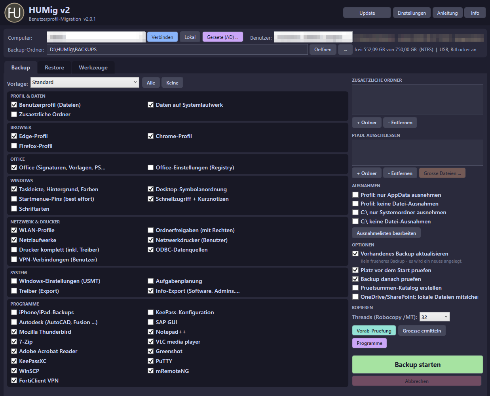
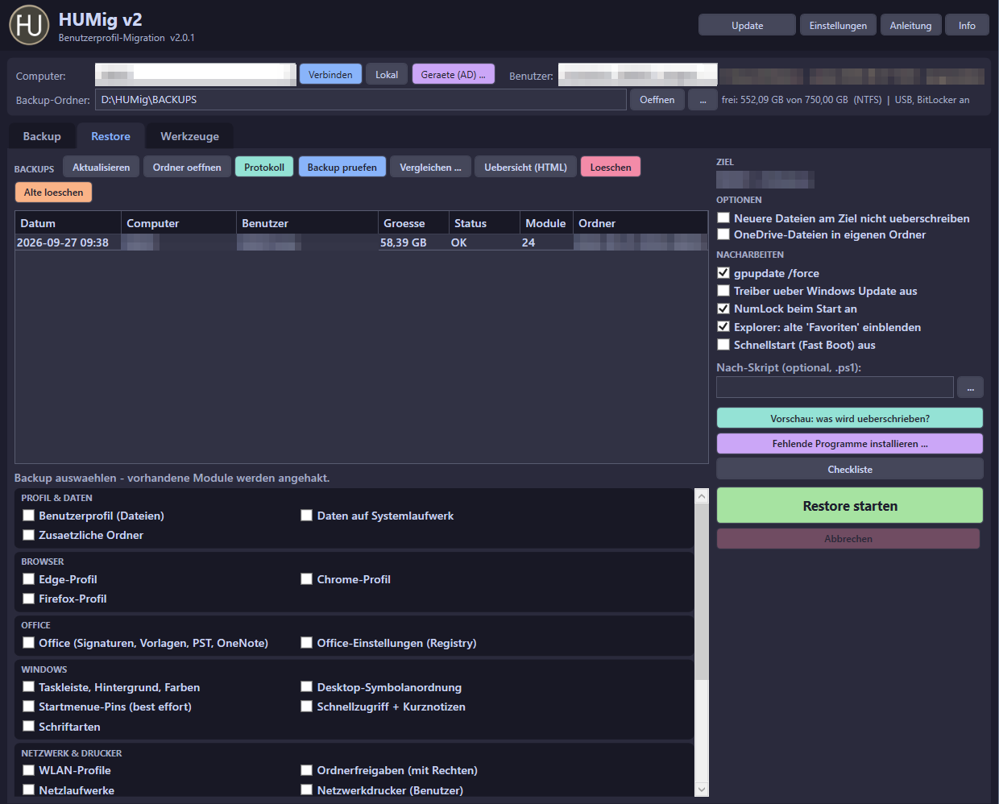
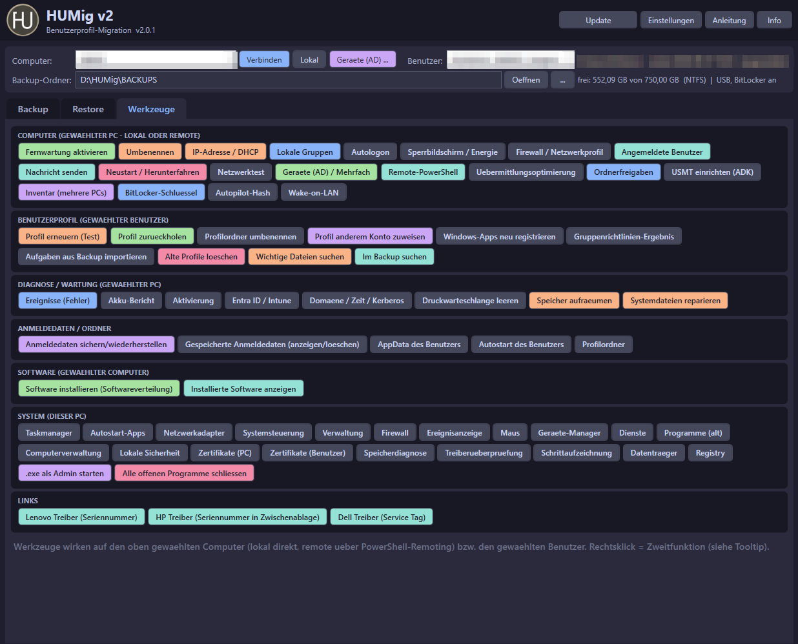

![]()
Willkommen bei HUMig v2
HUMig sichert Benutzerprofile unter Windows 10/11 und stellt sie auf demselben oder einem neuen PC wieder her – lokal auf ein USB-Laufwerk oder über das Netzwerk von jedem PC aus. Dazu kommen viele Werkzeuge für die tägliche PC-Betreuung.
Docs\Anleitung.html.1Schnellstart
Erster Start
- Tool-Ordner auf ein USB-Laufwerk (am besten NVMe) oder lokal kopieren.
- Start.cmd ausführen – fragt nach Administratorrechten. Dabei entsteht HUMig.exe: ab dann damit starten (kein Konsolenfenster, anheftbar).
- Oben den Backup-Ordner prüfen (Standard:
BACKUPS\neben dem Tool) und bei Bedarf einen Standort anlegen (siehe Standorte).
Umzugs-Assistent
Umzug … (Reiter Backup, neben Rueckmeldung) führt Schritt für Schritt durch einen Umzug: 1 alter PC und Benutzer (im Hauptfenster wählen, Auswahl übernehmen) · 2 Vorab-Prüfung · 3 Backup · 4 neuer PC und Zielbenutzer · 5 Restore – das Backup aus Schritt 3 wird automatisch markiert, fehlende Programme werden zuerst angeboten · 6 Checkliste und Umzug abschließen. Nach Backup und Restore geht es von selbst zum nächsten Schritt. Das Fenster kann offen bleiben, während man im Hauptfenster arbeitet; geschlossen bleibt der Stand erhalten (%APPDATA%\HUMig\umzug.json) und der Assistent macht beim nächsten Öffnen dort weiter – auch nach einem Neustart von HUMig. Neu beginnen verwirft nur den Stand, nie ein Backup.
Profil umziehen (alter PC → neuer PC)
- Alter PC: Computer wählen (Lokal oder Name eintippen + Verbinden), Benutzer wählen.
- Reiter Backup: Vorlage wählen (Standard, Komplett oder eine eigene – ohne USMT siehe Vorlagen), optional Programme – erkannte Programme werden als Module ergänzt.
- Vorab-Pruefung – zeigt Anmeldestatus, Cloud-Ordner, Größe und freien Platz. Dann Backup starten.
- Neuer PC: Computer + Benutzer wählen, Reiter Restore, Backup markieren, optional Vorschau: was wird ueberschrieben?
- Restore starten – fehlen am neuen PC Programme aus dem Backup, bietet HUMig an, sie zuerst zu installieren; danach läuft der Restore automatisch. Am Ende Checkliste.
2Die Oberfläche
| Bereich | Bedeutung |
|---|---|
| Umzug … | Umzugs-Assistent – geführt vom alten zum neuen PC, fortsetzbar. |
| Update | Links: neue Version laden und prüfen (Tool startet neu, eigene Daten bleiben). Wird gelb, wenn im gewählten Kanal eine neuere Version da ist. Rechts: andere Version / Vorversion, Update-Einstellungen, GitHub-Token. |
| Reiter Status | Startseite – alles auf einen Blick: Wichtig (offene Hinweise), Backup-Zeitpläne (letzter Lauf, letzter Erfolg, nächster Lauf), letzte Backups je PC und Benutzer, Server-Backup (letzte Sicherung, Alter und Zustand je Platte, Archiv fällig) und App-Updates der letzten 7 Tage. Oeffnen springt in den passenden Reiter. Hinweise beim Start stehen auch in der Ausgabe: Zeitplan seit 8 Tagen ohne Erfolg (StatusStaleDays in settings.json), letzter Lauf fehlgeschlagen oder Aufgabe fehlt, Server-Platte länger nicht gesichert als die Warnfrist des Profils („Platte wechseln“), Archiv fällig, Massenlöschung. Ausblenden: Einstellungen › Allgemein. HUMig öffnet beim Start den zuletzt gewählten Reiter. |
| Benutzer-Auswahl | Hinter dem Benutzer steht die ungefähre Profilgröße (· ~12,3 GB) aus dem letzten Backup bzw. der letzten Messung. Rechts daneben eine Ampel: gelb = großes Profil (ab 20 GB), orange = knapp (über 80 % des freien Platzes am Backup-Ziel), rot = passt nicht aufs Ziel. |
| Einstellungen | Links: Einstellungsfenster. Rechts: Konfigurationsdateien im Editor, Config-/Log-Ordner. |
| Anleitung / Info | Diese Anleitung (F1) bzw. Version und Quelle. |
| Standort | Auswahl des Standort-Profils (Backup-Ordner, Software-/Treiberverteilung, USMT, Domäne). Nur sichtbar, wenn Standorte angelegt sind. |
| Computer | Dieser PC oder Name/IP eines anderen PCs. Enter oder Verbinden lädt die Profile. Rechtsklick auf Verbinden: andere Anmeldedaten. Lokal = zurück auf diesen PC. |
| Geraete (AD) … | PCs aus dem Active Directory – einen per Doppelklick wählen oder mehrere für Mehrfachaktionen anhaken. |
| Benutzer | Profil am gewählten PC (nur echte Benutzerkonten, keine Dienstkonten). [angemeldet] = hat eine Desktop-Sitzung, [aktiv] = nur Registry geladen (z. B. getrennte Sitzung). Vorausgewählt ist am eigenen PC der Benutzer, der HUMig startet. Für einen neuen PC ohne Profil: Konto als DOMÄNE\Benutzer eintragen (dann das USMT-Modul mitwählen). |
| Backup-Ordner | … links: Ordner wählen (USB, Freigabe), rechts: Standard. Oeffnen im Explorer, Verschluesseln … = BitLocker To Go für das USB-Laufwerk. |
| Live-Anzeige | Während Backup, Restore und Server-Backup steht unter den Modulen bzw. VMs: Lesen / Schreiben des Kopiervorgangs in MB/s (Robocopy, USMT, Windows Server-Sicherung – gilt auch für Netzwerkziele), CPU und Arbeitsspeicher, jeweils mit Verlauf der letzten 60 Sekunden. Am Ende: Durchschnitt, Spitze, gelesene und geschriebene Menge. CPU und Arbeitsspeicher sind die Werte des PCs, auf dem HUMig läuft – nicht die eines über das Netzwerk gesicherten PCs. |
| Konsole (unten) | Alle Meldungen farbig. Rechtsklick = leeren, Strg+C = kopieren. Die Trennlinie ist verschiebbar. |
Ein pulsierender grüner Punkt (Statusleiste unten, im Reiter Server-Backup neben dem Ladehinweis) zeigt, dass HUMig im Hintergrund noch liest oder arbeitet – die Oberfläche bleibt dabei bedienbar. Alle Tabellen passen die Spaltenbreite dem Inhalt an (bei Bedarf waagrechter Bildlauf); Dauern werden lesbar angezeigt (z. B. 6 h 12 min).
Größe anpassen (kleine Bildschirme)
Strg++ / Strg+− oder Strg+Mausrad vergrößert/verkleinert die gesamte Oberfläche, Strg+0 = automatisch. Fest einstellen: Einstellungen › Allgemein › Skalierung. Die Größe wird beim Beenden gespeichert und gilt für alle Fenster.
Ohne Administratorrechte bietet HUMig den Benutzer-Modus an – für Profile anderer Benutzer, Remote, USMT und die meisten Werkzeuge werden Adminrechte gebraucht.
3Backup

So funktioniert es
| Was | Wie |
|---|---|
| Dateien | Robocopy mit bis zu 128 Threads und Ausnahmelisten |
| Benutzer-Einstellungen | Registry-Export aus dem Benutzer-Hive – wird geladen, wenn der Benutzer nicht angemeldet ist; Pfade und SID werden beim Restore auf den Zielbenutzer umgeschrieben |
| Windows-Einstellungen | optional Microsoft USMT (ScanState/LoadState) – legt beim Restore auch das Profil an |
| Backup-Ordner | je PC + Benutzer ein Ordner mit Datum; Protokolle, manifest.json und Berichte liegen darin |
Module
Links anhaken, was gesichert werden soll (Alle / Keine). Nach Groesse ermitteln steht neben jedem Modul die Größe.
| Gruppe | Module |
|---|---|
| Profil & Daten | Benutzerprofil (Dateien) · Daten auf Systemlaufwerk (C:\ außerhalb von Windows/Programmen) · Zusätzliche Ordner |
| Browser | Edge-, Chrome-, Firefox-Profil (Lesezeichen, Erweiterungen, Einstellungen) |
| Office | Signaturen, Vorlagen, PST, OneNote · Office-Einstellungen (Registry) |
| Windows | Taskleiste, Hintergrund, Farben · Desktop-Symbolanordnung · Startmenü-Pins (best effort) · Schnellzugriff + Kurznotizen · Schriftarten |
| Netzwerk & Drucker | WLAN-Profile · Ordnerfreigaben (mit Rechten) · Netzlaufwerke · Netzwerkdrucker · Drucker komplett (inkl. Treiber) · ODBC · VPN-Verbindungen |
| System | Windows-Einstellungen (USMT) · Aufgabenplanung · Treiber (Export) · Info-Export (Software, Admins, IP …) |
| Programme | iPhone/iPad-Backups, KeePass, Autodesk, SAP GUI u. a. – dazu alle Programme, die der Programm-Katalog erkennt |
Vorlagen
Vorlagen haken nur Module vor – danach frei änderbar. Erkannte Programme (Gruppe Programme) hakt Standard nicht an – von Hand anhaken; Komplett hakt alle an, eine eigene Vorlage die gespeicherten. Beim ersten Start ist Standard gewählt, danach die zuletzt gewählte Vorlage.
| Vorlage | Enthält |
|---|---|
| Standard | Profil, Daten auf C:\, Edge, Chrome, Firefox, Office, Office-Registry, Taskleiste, Desktop-Symbole, Startmenü-Pins, Schnellzugriff, WLAN, Ordnerfreigaben, Netzlaufwerke, Netzwerkdrucker, USMT, Aufgabenplanung, Info |
| Komplett | alle Module |
| eigene Vorlagen | mit Als Vorlage speichern ... angelegt |
Eigene Vorlage anlegen: Module anhaken, Als Vorlage speichern ..., Namen eingeben (z. B. Notebook oder Verwaltung). Verwalten: eigene Vorlage in der Liste wählen, dann Rechtsklick auf die Liste → Umbenennen, Mit aktueller Auswahl überschreiben oder Löschen. Die eingebauten Vorlagen Standard und Komplett sind fest. Eigene Vorlagen liegen in Config\modules.json und bleiben bei Updates erhalten.
- Vorlage Standard wählen.
- Haken bei Windows-Einstellungen (USMT) entfernen.
- Als Vorlage speichern ... – Name z. B. Standard ohne USMT.
Ohne Administratorrechte läuft HUMig im Benutzer-Modus: USMT und alle Module, die Adminrechte brauchen (Daten auf C:\, WLAN, Freigaben, Aufgabenplanung, Info-Export), sind dort ausgeblendet und werden nicht gesichert – eine eigene Vorlage ist dafür nicht nötig.
Zusätzliche Ordner und Ausnahmen
- Zusätzliche Ordner (+ Ordner): die Ordnerauswahl startet im Profil des oben gewählten Benutzers (Baum ab Dieser PC, remote über die Admin-Freigabe) – nicht in den Ordnern des Kontos, unter dem HUMig läuft. Gleiches gilt für Pfade ausschließen. Sie werden im Modul Zusätzliche Ordner mit vollem Pfad gesichert. Sind Ordner eingetragen, bleibt das Modul angehakt (auch nach Keine oder einem Vorlagenwechsel) – so lassen sich auch nur diese Ordner sichern und messen. Nicht mehr sichern: Ordner aus der Liste entfernen. Restore: Ordner aus dem Profil des Quell-Benutzers kommen ins Profil des Zielbenutzers (auch bei anderem Profilnamen); Ordner im Profil eines anderen Benutzers nach
Profil\Zusaetzliche Ordner; liegt das Ziel im OneDrive-/SharePoint-Ordner des Zielbenutzers, nachProfil\OneDrive-Wiederherstellung(sonst würden neuere Cloud-Versionen überschrieben) – jeweils mit Hinweis im Protokoll. Wichtige Dateien suchen … findet PST, KeePass, Access, OneNote, CAD … außerhalb der gesicherten Bereiche am gewählten Computer – Treffer als Zusätzliche Ordner übernehmen (wie unter Werkzeuge). - Ausschließen: einzelne Ordner/Dateien weglassen (Rechtsklick auf + Ordner = Pfad eintippen). Grosse Dateien … zeigt die größten Ordner/Dateien der letzten Messung – markierte direkt ausschließen.
- Schalter: Profil: nur AppData ausnehmen · Profil: keine Datei-Ausnahmen · C:\ nur Systemordner ausnehmen · C:\ keine Datei-Ausnahmen · Ausnahmelisten bearbeiten.
Optionen
| Option | Wirkung |
|---|---|
| Vorhandenes Backup aktualisieren | Gibt es schon ein Backup dieses PCs/Benutzers, wird es weitergeführt – nur Neues/Geändertes wird kopiert. Am Quell-PC gelöschte Dateien werden im Backup nach _GELOESCHT\<Datum_Zeit> verschoben (beiseitegelegt): der Restore bringt so nur den aktuellen Stand, verloren geht nichts. Ein frisches Backup („Neu“) enthält nur den aktuellen Stand. |
| Platz vor dem Start prüfen | Simuliert das Backup und startet nicht, wenn der Platz nicht reicht (Rückfrage). |
| Backup danach prüfen | Vergleich Quelle ↔ Backup und SHA-256-Stichprobe. |
| Prüfsummen-Katalog erstellen | Standard aus. SHA-256 jeder Datei (Pruefsummen.tsv) – damit lässt sich das Backup später jederzeit vollständig prüfen. Der erste Lauf dauert lange, weil jede Datei gelesen wird. |
| OneDrive/SharePoint: lokale Dateien mitsichern | Aus: Cloud-Ordner werden ausgelassen. Ein: nur Dateien, die am PC liegen. Nur-Cloud-Dateien werden nie heruntergeladen. |
| Threads | 1 = schonend (HDD, langsames Netz) · 32 = Standard · 128 = maximal (NVMe) |
_GELOESCHT\<Datum_Zeit>\<Modul>\…. Sicherheitsregeln: nur nach fehlerfreiem Kopieren; jede Datei wird an der Quelle einzeln nachgeprüft – nur wenn sie dort sicher fehlt (Ordner darüber lesbar), wird sie verschoben, bei jedem Zweifel (kein Zugriff, Netzwerkfehler) bleibt sie; ausgeschlossene Dateien/Ordner und Cloud-Ordner (OneDrive/SharePoint) werden nie angefasst. Der Restore spielt _GELOESCHT nicht zurück; Im Backup suchen mit Mit gelöschten findet die Dateien weiterhin. Nach 90 Tagen (Einstellungen › Allgemein, 0 = nie) entfernt der nächste Lauf ältere Gruppen; von Hand: Geloeschte leeren. Das Protokoll nennt je Modul, wie viele Dateien beiseitegelegt wurden; die Backup-Liste zeigt sie in der Spalte Geloescht, der Restore und die Vorschau weisen darauf hin.Auswahl geändert: Ein aus Zusätzliche Ordner herausgenommener Ordner und ein seit dem letzten Lauf neu ausgeschlossener Pfad werden ebenfalls nach
_GELOESCHT verschoben (Grund im Protokoll) – der Restore spielt sie nicht mehr ein. Jeder zusätzliche Ordner behält dabei seinen festen Platz im Backup. Ein Modul, das diesmal nicht angehakt ist, bleibt mit seinem alten Stand im Backup-Ordner; das Protokoll weist darauf hin, der Restore bietet es nicht mehr an. Wieder anhaken = beim nächsten Lauf aktualisiert.Vorab-Prüfung und Größe
Vorab-Pruefung prüft Verbindung, Anmeldestatus, Cloud-Ordner aller Anbieter, USMT und zeigt die Backup-Größe mit freiem Platz am Ziel – ist noch nicht gemessen, startet die Messung automatisch. Groesse ermitteln misst nur (Robocopy-Simulation, kopiert nichts).
Cloud-Ordner (OneDrive, SharePoint, Dropbox …)
HUMig erkennt die Sync-Ordner aller Anbieter, die sich bei Windows registrieren. Dateien, die nur in der Cloud liegen (Platzhalter), werden nie gelesen – so wird nichts heruntergeladen und das Backup bleibt abbrechbar. Findet HUMig Nur-Cloud-Dateien in einem unbekannten Ordner, lässt es diesen aus und meldet das.
Während und nach dem Backup
Abbrechen stoppt sofort (auch hängende Kopiervorgänge). Ein abgebrochenes Backup bleibt erhalten und ist als abgebrochen markiert.
| Datei im Backup | Inhalt |
|---|---|
Bericht_Backup.html | Druckbares Protokoll mit Unterschriftsfeldern |
HUMig.log | Ablauf mit allen Meldungen |
Robocopy.log | Kopierprotokoll. Die Spalte Übersprungen/Skipped enthält absichtlich ausgelassene Dateien (versteckt/System wie pagefile.sys, Nur-Cloud, Ausschlussmuster) – das ist kein Fehler. Fehler stehen unter FAILED. |
manifest.json | Beschreibung des Backups (Module, Programme, Status) |
Pruefsummen.tsv | Prüfsummen-Katalog (wenn eingeschaltet) |
Zeitplan (automatisches Backup)
Mit Zeitplan … (unter Abbrechen) sichert HUMig das eigene Profil an diesem PC automatisch – z. B. jeden Mittag auf ein USB-Laufwerk oder ein Netzlaufwerk. Übernommen wird die aktuelle Auswahl: angehakte Module, Zusätzliche Ordner, Ausschlüsse, Ausnahmen, Optionen (Prüfen, Katalog, OneDrive, Platzprüfung), Threads und der Backup-Ordner. HUMig muss dafür nicht geöffnet sein. Rechtsklick auf den Knopf = Zeitpläne verwalten.
| Einstellung | Bedeutung |
|---|---|
| Fortlaufend | Das neueste Backup dieses PCs/Benutzers im Backup-Ordner wird aktualisiert – nur neue/geänderte Dateien, daher schnell. Es gibt einen (immer aktuellen) Stand; am Quell-PC gelöschte Dateien werden im Backup beiseitegelegt und nach der eingestellten Zahl von Tagen entfernt. |
| Neues Backup | Jeder Lauf legt einen eigenen Stand an (kopiert alles – dauert länger, braucht mehr Platz). |
| Kombination | Zwei Zeitpläne, z. B. täglich fortlaufend + sonntags neu: der Sonntagslauf friert den Stand der Woche ein, die täglichen Läufe aktualisieren danach das neue Backup. Ergebnis: je Woche ein fester Stand plus ein aktueller. Laufen zwei Zeitpläne gleichzeitig an, wartet der zweite, bis der erste fertig ist. |
| Wann | Täglich oder wöchentlich (Tage, Uhrzeit) oder bei Anmeldung mit Verzögerung. Verpasste Läufe (PC war aus) werden nachgeholt, auch im Akkubetrieb. |
| Alte Backups automatisch löschen | Nach einer Massenlöschung (Trojaner-Verdacht, siehe Gelöschte Dateien) wird 14 Tage lang nichts gelöscht – die älteren, sauberen Stände bleiben erhalten (Meldung „Aufbewahrung ausgesetzt“). Standard aus. Ein: nach einem erfolgreichen Lauf bleiben die neuesten N brauchbaren Backups (OK/Warnung) dieses Benutzers von diesem PC im Backup-Ordner (auch von Hand erstellte), ältere werden endgültig gelöscht. Abgebrochene oder fehlerhafte Backups zählen nicht mit und werden nur entfernt, wenn es ein neueres brauchbares gibt; unvollständige (z. B. PC beim Sichern heruntergefahren) bleiben. Nach einem Fehler wird nichts gelöscht. |
| Meldung | Windows-Meldung nach jedem Lauf (Klick öffnet den Bericht) – oder nur bei Warnung, Fehler oder übersprungenem Lauf. Jeder Lauf schreibt außerdem ins Anwendungsprotokoll (Quelle HUMig: 1100 OK, 1101 Warnung, 1102 Fehler, 1103 übersprungen). Ist am PC eine Teams-Benachrichtigung mit Profil-Backup-Kategorien eingerichtet, kommt die Meldung auch nach Teams. Laufende Browser: gesperrte Dateien (Cookies, Sitzung) sind nur ein Hinweis, der Lauf bleibt erfolgreich. |
| USB-Laufwerk auswerfen | Standard aus. Nur bei einem USB-/Wechsellaufwerk als Ziel. Nach jedem Lauf (auch nach einem Fehler, Abbruch oder Platzmangel) wird das Laufwerk ausgeworfen – ein Verschlüsselungstrojaner auf dem PC kommt dann nicht mehr an die Backups. Vor dem nächsten Lauf wieder anstecken, sonst wird er übersprungen und gemeldet. Klappt das Auswerfen nicht (z. B. Datei noch geöffnet), endet der Lauf mit Warnung und Grund. Offline schalten gibt es hier nicht – dafür wären Administratorrechte nötig. |
- Konto: Die geplante Aufgabe läuft im Konto des Benutzers ohne Kennwort und nur, solange er angemeldet ist. Ohne Administratorrechte (auch im Benutzer-Modus) werden nur die Module des eigenen Profils gesichert; mit Administratorrechten angelegt, läuft die Aufgabe mit höchsten Rechten und sichert alle gewählten Module.
- Nur eigenes Profil, nur dieser PC: Für andere Benutzer HUMig in deren Anmeldung starten und dort planen.
- Backup-Ziel: Ein USB-Laufwerk wird an seiner Laufwerksbezeichnung erkannt – der Laufwerksbuchstabe darf sich ändern (Laufwerk daher benennen, z. B. BACKUP-MEIER). Ein Netzlaufwerk wird als UNC-Pfad (
\\Server\Freigabe\…) gespeichert. Ist das Ziel beim Lauf nicht da, wird der Lauf übersprungen und gemeldet. - Ort von HUMig: Die Aufgabe startet HUMig aus seinem Ordner. Liegt HUMig auf einem USB-Stick, läuft das Backup nur, wenn der Stick steckt – besser HUMig lokal ablegen (z. B.
C:\Tools\HUMig). HUMig warnt beim Anlegen. - Geöffnete Programme: Outlook und Browser sperren ihre Dateien (PST, Profil-Datenbanken) – diese können im Backup fehlen. Der Lauf nennt die geöffneten Programme im Protokoll. Tipp: Zeitpunkt wählen, an dem sie meist geschlossen sind, oder bei Anmeldung.
- Beim Start kann für einen Moment ein PowerShell-Fenster aufblitzen.
| Wo | Was |
|---|---|
| Rechtsklick auf Zeitplan … | Liste mit Inhalt (Was: Module, Zusätzliche Ordner mit Pfad), Ziel, nächstem und letztem Lauf, Ergebnis und Meldung – Jetzt starten, Protokoll, Bericht, Löschen (vorhandene Backups bleiben erhalten) |
%LOCALAPPDATA%\HUMig\Zeitplaene\ | Zeitplan-Dateien (*.json) des Benutzers, Protokolle im Unterordner Logs (je Zeitplan die letzten 30) |
| Aufgabenplanung | Aufgabe HUMig Backup - <Benutzer> - <Name> im Ordner \HUMig – ohne Rechte dafür (Standardbenutzer) in der obersten Ebene |
| Backup-Ordner | wie beim Backup von Hand: Bericht_Backup.html, HUMig.log, Robocopy.log |
4Programm-Katalog und Lizenzen
Programme (Reiter Backup) erkennt installierte Programme am Quell-PC. Für bekannte Programme werden passende Module eingeblendet (angehakt nur, wenn die gewählte Vorlage sie enthält – z. B. Komplett); die Übersicht zeigt, was übertragbar und was nicht übertragbar ist, welche Lizenz-Hinweise gelten, ob eine Datenbank dabei ist, welches Programm vorher geschlossen wird, was nach dem Restore zu tun ist und ob der Eintrag geprüft ist (Datum). Rechtsklick = nur Übersicht.
Der Katalog kennt u. a.: Firefox, Chrome, Edge, Microsoft 365, Thunderbird, Notepad++, 7-Zip, VLC, LibreOffice, Acrobat Reader, Foxit, GIMP, Inkscape, Audacity, Paint.NET, IrfanView, Greenshot, OBS, VS Code, KeePass/KeePassXC, FileZilla, PuTTY, WinSCP, mRemoteNG, AnyDesk, TeamViewer, FortiClient VPN, Zotero, Citavi, Obsidian, Arduino, GeoGebra, SketchUp, Autodesk, SMART Notebook, ActivInspire, Untis, Packet Tracer, Zoom, Teams, WinRAR, Total Commander, Beyond Compare, Sublime Text – dazu rund 440 weitere (u. a. Next-Exam, LanSchool, NetSupport School, TI-Nspire, Mathematica, SOLIDWORKS, CATIA, Archicad, SAP GUI, Adobe-Programme, CorelDRAW, JAWS, Read&Write, Slack, Discord, Telegram, Signal, Opera, Docker Desktop, SSMS, pgAdmin, WinMerge, TortoiseGit/SVN, Veyon, NVDA, calibre, Anki, OrcaSlicer, Brave, Vivaldi, LibreWolf, Git, GitHub Desktop/CLI, Windows Terminal, PowerToys, VeraCrypt, KiCad, QGIS, Blender, FreeCAD, PrusaSlicer, Cura, Bambu Studio, Krita, MuseScore, OpenBoard, Wireshark, VirtualBox, JetBrains-IDEs, DBeaver, HeidiSQL, MobaXterm, RustDesk, Citrix Workspace).
Bei jedem Eintrag steht, was nicht mitgeht (NotTransfer): z. B. in Chrome, Edge, Brave und Vivaldi gespeicherte Kennwörter und Cookies – sie sind an Windows-Konto und PC gebunden, daher vorher Browser-Sync oder Kennwort-Export. Geräte-Identitäten (RustDesk-ID, AnyDesk-ID, Syncthing-Schlüssel, Chrome-Remotedesktop-Host, VPN-Schlüssel) werden absichtlich nicht kopiert. VPN-Clients, Virenschutz, Kartenleser und Signatursoftware stehen als reine Hinweise im Katalog – HUMig erkennt sie und setzt die Nacharbeit auf die Checkliste. Wo bewusst vertrauliche Daten mitgehen (z. B. Telegram-Sitzung, gespeicherte Zugangsdaten in FileZilla, WinSCP oder DBeaver, API-Schlüssel in Konfigurationen), steht das im Eintrag – das Backup dann vertraulich behandeln.
* in der Konsole, in der Backup-Liste, im Bericht und in der Checkliste – gesichert werden sie trotzdem. Bitte nach dem Umzug das Programm testen und Rückmeldung geben: gelber Knopf Rückmeldung im Reiter Backup (erkannte Programme am PC) bzw. Rückmeldung zu Programmen im Reiter Restore (Programme des markierten Backups) – oder einzeln: Fenster Programme › Zeile markieren › Rückmeldung geben …. Es öffnet sich ein vorausgefülltes GitHub-Issue im Browser (GitHub-Konto nötig) oder – wenn unter Einstellungen › Allgemein › Rückmeldung per E-Mail an eine Adresse steht, z. B. die der Systembetreuung – wahlweise eine E-Mail im Mailprogramm (ohne Konto). Bei vielen Programmen ist der Text zu lang für die Adresse: dann liegt er in der Zwischenablage – im GitHub-Feld mit Strg+V einfügen. Es wird nichts automatisch gesendet; bitte keine Kennwörter oder Namen eintragen. Bestätigte Einträge bekommen im nächsten Release ein Prüfdatum.rarreg.key, Total Commander wincmd.key, Beyond Compare, Sublime Text) werden mit Lizenz gesichert und sind am neuen PC gleich registriert – Modulname mit (+ Lizenz). Nicht übertragbar sind Lizenzen, die an Konto oder Hardware gebunden sind (Microsoft 365, Adobe, Autodesk …) – dafür gibt es Hinweise in der Checkliste.Ein Programm auf Mitnahme prüfen
So prüfst du, ob ein Programm (z. B. ein ungeprüfter Katalog-Eintrag) mit seinen Einstellungen wirklich umzieht. Am einfachsten mit einem Test-Benutzer oder in der Windows-Sandbox als Ziel – nicht mit einem echten Benutzer.
- Vorbereiten (alter PC): im Programm etwas Erkennbares einstellen (z. B. eine Option ändern, einen Favoriten oder eine Verbindung anlegen) und das Programm schließen.
- Erkennen: Reiter Backup › Programme. In der Liste muss das Programm als installiert stehen. Die Zeile zeigt, was laut Katalog mitgeht (Übertragbar), was nicht (Nicht übertragbar), Lizenz und Nacharbeit. Wird es nicht erkannt, passt die Erkennung (Detect) nicht zum Namen unter „Programme und Features“ → Rückmeldung.
- Nur dieses Programm sichern: in der Gruppe PROGRAMME nur den Haken dieses Programms setzen, alle anderen Haken entfernen, Größe ermitteln und Backup starten.
- Protokoll lesen: je Eintrag steht z. B. DATA: 12 Dateien, 340 KB oder REG: Registry exportiert. nicht vorhanden: <Pfad> heißt: an diesem PC liegt dort nichts – entweder Programm nie benutzt oder der Pfad im Katalog ist falsch (dann den echten Ordner suchen, z. B. mit + Programm hinzufügen, der Ordner nach Namen vorschlägt).
- Backup ansehen: im Backup-Ordner liegt
App_<Name>mit den gesicherten Ordnern bzw..reg-Dateien. - Zurückspielen (Ziel): Programm am Ziel installieren (Reiter Restore › Fehlende Programme installieren …), dann nur dieses Modul zurückspielen und das Programm starten: Ist die Einstellung aus Schritt 1 da? Lizenz, Anmeldung und Kennwörter so wie im Eintrag beschrieben?
- Rückmeldung: Rückmeldung bzw. Rückmeldung zu Programmen – passt / was fehlte / richtiger Pfad. Als Administrator kannst du einen bestätigten Eintrag auch selbst markieren: Programme › Katalog bearbeiten … › Reiter Quelle › Geprüft am (wird in
Config\apps.jsongespeichert).
Katalog-Statistik: Nach jedem Backup vermerkt HUMig je Katalog-Programm und PC/Benutzer, ob die Pfade des Eintrags Daten hatten (gefunden, teilweise, nicht vorhanden) – in Katalog-Statistik.json im Backup-Ordner, nur lokal, es wird nichts gesendet. Das Fenster Programme zeigt das in der Spalte Praxis (Backups), z. B. „an 12 PC(s) gefunden, 1x nicht vorhanden“; Katalog-Statistik … listet alle Programme mit Ergebnis (verdächtige oben). Dort: Aus vorhandenen Backups einlesen (auch für ältere Backups) und – als Administrator – Markierte als geprüft …, sobald das Programm nach einem Restore wirklich lief. Die Rückmeldung enthält die Zahlen automatisch.
%APPDATA%, %LOCALAPPDATA%, den Benutzerordner (Ordner mit Punkt wie .programm) und HKEY_CURRENT_USER\Software vor und nach einer Einstellungsänderung ansehen – der Ordner bzw. Schlüssel mit dem neuen Änderungsdatum ist der gesuchte.Programm hinzufügen (Assistent)
Der einfachste Weg, ein weiteres Programm mitzusichern – so wie früher die Programmordner von Hand ins Backup kopiert wurden, nur automatisch:
- Oben PC und Benutzer wählen (Verbinden), dann Programme › + Programm hinzufuegen … (oder im Editor).
- Programm aus der Liste der installierten Programme wählen. Ist es schon im Katalog, bietet HUMig an, den vorhandenen Eintrag zu bearbeiten.
- HUMig sucht am PC Ordner und Registry-Schlüssel mit dem Programm- oder Herstellernamen: AppData Roaming/Local/LocalLow, Dokumente, ProgramData,
HKCU\Software,HKLM\SOFTWAREund im Programmordner Unterordner für Plug-ins/Add-ins, Vorlagen und Konfiguration sowie Lizenzdateien. Jeder Vorschlag steht mit Größe da – Haken setzen oder entfernen. Caches, Logs und Temp-Ordner werden automatisch ausgelassen. - „Programm vor Backup und Restore schließen“ ist mit dem Prozessnamen vorbelegt (aus dem Programmordner bzw. laufenden Programmen).
- Speichern – ab sofort wird das Programm erkannt und mitgesichert. Erweitert (Editor) … öffnet den Eintrag stattdessen im Editor zum Verfeinern.
Katalog bearbeiten
Im Fenster Programme (oder Einstellungen › Module) öffnet Katalog bearbeiten … den Editor (für Feinheiten – neue Programme am einfachsten mit dem Assistenten, im Editor + Programm hinzufuegen …; + Leer legt einen leeren Eintrag an). Links alle Einträge mit Suche und Filter (am PC erkannt, geprüft, ungeprüft, nur Hinweis, eigene, geändert), rechts die Reiter:
| Reiter | Inhalt |
|---|---|
| Allgemein | Id (App_…), Name, Erkennung (regulärer Ausdruck auf den Programmnamen in Apps & Features) mit Testen am PC, Paket der Softwareverteilung mit Testen, optional vorhandene Module mitverwenden |
| Sichern | Einträge vom Typ Ordner, Dateien (mit Filter, ohne Unterordner) oder Registry – Rolle (Einstellungen, Plug-ins/Add-ins, Daten, Datenbank, Lizenz, Vorlagen), Ordner/Dateien auslassen, Lizenzdatei. Ordner waehlen … wandelt den Pfad in Platzhalter um (z. B. {APPDATA}\Hersteller\Programm), Pfad pruefen zeigt am oben gewählten PC für den gewählten Benutzer, ob Ordner/Schlüssel vorhanden sind und wie groß. Je Eintrag steht, ob er zum Benutzer oder zur Maschine gehört (Maschine = Restore nur mit Administratorrechten). |
| Schließen & Dienste | Programm vorher schließen (Prozessnamen ohne .exe, Laufende Prozesse am PC …) und Dienste vorher stoppen (Dienste am PC …) |
| Hinweise | Was übertragen wird, was nicht übertragbar ist, Lizenz, Versionsverhalten, Nacharbeiten für die Checkliste |
| Quelle | Geprüft am (Knopf heute), Links auf Hersteller-Doku, Notiz – fehlt das Datum, gilt der Eintrag als ungeprüft |
- Gespeichert wird nur in
Config\apps.json(vorher Sicherungapps.json.bak).apps.default.jsonbleibt unverändert – ein geänderter Standard-Eintrag wird als Kopie mit gleicher Id abgelegt, Auf Standard zuruecksetzen entfernt sie wieder. Löschen geht nur bei eigenen Einträgen. - Exportieren … / Importieren …: einzelne Einträge als JSON-Datei weitergeben (z. B. an andere Standorte).
- Nach dem Speichern lädt HUMig den Katalog neu; Haken im Reiter Backup bleiben erhalten, erkannte Programme werden neu ermittelt.
- Im Benutzer-Modus (oder ohne Schreibrecht auf
Config) ist der Editor nur zur Ansicht.
Programm schließen, Dienste, Datenbanken
- Programm schließen: Läuft ein Programm mit Eintrag unter Schließen, fragt HUMig vor Backup bzw. Restore einmal für alle: Schließen (wie der Benutzer das Fenster schließt – ungespeicherte Arbeit fragt das Programm selbst nach), Schließen, notfalls beenden (nach 20 s hart beenden – ungespeicherte Daten gehen verloren), Modul überspringen oder Trotzdem kopieren (geöffnete Dateien können fehlen oder inkonsistent sein). Die Vorab-Pruefung zeigt laufende Programme schon vorher an. Geplante Backups beenden nie ein Programm – das Modul wird übersprungen und gemeldet. Was passiert ist, steht im Bericht und im
manifest.json.
Browser (Edge, Chrome, Firefox) fragen ebenfalls – geöffnete Browser sperren z. B. Cookies und Sitzungen, die dann im Backup fehlen. Ohne Abfrage (geplantes Backup) werden Browser-Profile trotzdem kopiert, weil Browser oft dauerhaft im Hintergrund laufen. Wird ein Browser-Profil trotz laufendem Browser kopiert, sind die gesperrten Dateien nur ein Hinweis (kein Fehler, keine Warnung) – Backup und Teams-Meldung bleiben „erfolgreich“; für eine vollständige Sicherung den Browser vorher schließen. Bei anderen Programmen bleiben nicht gesicherte Dateien ein Fehler. - Dienste stoppen: Für Datenbanken, die ein Dienst geöffnet hält (SQL Server Express, Firebird, MySQL). Nur mit Administratorrechten; der Dienst wird nach dem Kopieren immer wieder gestartet (auch bei Fehler oder Abbruch). Im Benutzer-Modus werden Dienst-Datenbanken mit Hinweis ausgelassen.
- Datei-Datenbanken (SQLite, Access, KeePass …): Rolle Datenbank, Art Datei. Bei SQLite kopiert HUMig die Begleitdateien
-wal,-shmund-journalautomatisch mit. Liegt neben einer Access-Datenbank eine Sperrdatei (.laccdb/.ldb), ist sie geöffnet – HUMig warnt. - Dienst-Datenbanken per Dateikopie sind nur bei gleicher Datenbank-Version am Ziel verlässlich. Sicherer ist die Sicherung des Herstellers bzw. der Datenbank – die Checkliste erinnert daran.
- Gesperrte Dateien (z. B. geöffnete Datenbank) stehen mit Dateiname im Protokoll und Bericht des Moduls.
- Nicht übertragbar: gespeicherte Kennwörter, die Windows verschlüsselt (DPAPI – z. B. in Browsern, FileZilla, WinSCP, mRemoteNG), Store-Apps und Standard-Programm-Zuordnungen. Einstellungen einer älteren Programmversion passen nicht immer zu einer neueren – Hinweis unter Version.
Datenbanken suchen
Welche Datei eine Datenbank ist, muss man nicht wissen: Datenbanken suchen (Werkzeuge › Benutzerprofil) durchsucht das Profil des gewählten Benutzers (auf Wunsch alle Profile), ProgramData, die Programmordner, das Systemlaufwerk und alle weiteren Festplatten nach SQLite-, Access-, KeePass-, SQL-Server- und Firebird-Dateien und listet Datenbank-Dienste (SQL Server, Firebird, MySQL/MariaDB, PostgreSQL). Windows, Caches, Browser- und Mail-Profile (sichern eigene Module) und Backup-Ordner werden ausgelassen.
- Ergebnis je Ordner: Art, Ort (AppData, ProgramData, Programmordner, Laufwerk D: …), Anzahl, Größe, zuletzt geändert und Geöffnet – dann läuft gerade das Programm dazu.
- Ordner als "Zusaetzliche Ordner" aufnehmen – schnell, aber das Programm muss man vor dem Backup selbst schließen.
- Als Katalog-Eintrag anlegen … – öffnet den Editor vorausgefüllt (Rolle Datenbank, Pfad mit Platzhaltern, markierte Dienste). Nur noch Name und Erkennung (Programm, zu dem die Datenbank gehört) eintragen und unter Schließen & Dienste das Programm wählen – dann schließt HUMig es vor Backup und Restore selbst. Nur als Administrator.
- Im Benutzer-Modus werden nur das eigene Profil, ProgramData, Programmordner und Laufwerke durchsucht (soweit lesbar).
D:\Daten und gibt es am neuen PC kein Laufwerk D:, meldet der Restore das verständlich als Warnung – die Daten bleiben im Backup und können von Hand an einen anderen Ort kopiert werden.Eigene Programme
Am einfachsten mit dem Assistenten oder im Editor. Von Hand in Config\apps.json (Aufbau wie apps.default.json, Felder siehe _Info dort), z. B. mit Lizenzdatei:
{ "Apps": [ { "Id": "App_MeinTool", "Name": "Mein Tool", "Detect": "^Mein Tool", "Items": [ { "Type": "Files", "Name": "LIC", "Path": "{PROGRAMFILES}\\MeinTool", "Filter": [ "*.lic" ], "License": true } ] } ] }
| Feld | Bedeutung |
|---|---|
Id, Name, Detect | App_…, Anzeigename, regulärer Ausdruck auf den Programmnamen in Apps & Features |
Items | Type Folder/Files/Reg, Name (Ordner im Backup), Path mit Platzhaltern {APPDATA} {LOCALAPPDATA} {PROFILE} {PROGRAMFILES} {PROGRAMFILESX86} {PROGRAMDATA} {SYSTEMDRIVE} {WINDIR} {PUBLIC} oder Key (HKCU/HKLM), dazu Filter, XD, XF, NoHidden, License |
Role, DbKind (je Item) | Settings / Plugins / Data / Database / License / Template; bei Database File (SQLite, Access, KeePass – -wal/-shm/-journal werden mitkopiert) oder Service |
CloseProcess | Prozessnamen ohne .exe – läuft das Programm, fragt HUMig vor Backup/Restore (schließen, notfalls beenden, überspringen, trotzdem kopieren). Geplante Backups beenden nie ein Programm. CloseDefault: "Copy" (in modules.json): ohne Abfrage trotzdem kopieren statt das Modul auszulassen. |
StopService | Dienste, die vor dem Kopieren gestoppt und danach immer wieder gestartet werden (nur als Administrator) |
Transfer, NotTransfer, License, Version, After | Hinweise; NotTransfer, Version und After landen in der Checkliste |
Package, WingetId | Paket der Softwareverteilung (regulärer Ausdruck) bzw. WinGet-ID für Fehlende Programme installieren |
Verified | { "Date": "JJJJ-MM-TT", "Sources": [ … ], "Note": "…" } – fehlt = ungeprüft |
5Restore und Backups verwalten
Oben Ziel-Computer und Ziel-Benutzer wählen, im Reiter Restore das Backup markieren und die Module anhaken. Stimmt der Benutzer nicht mit dem Backup überein, warnt HUMig.
Profil\Zusaetzliche Ordner. Gehören Dateien für Aufgaben, Schriftarten, Treiber, Drucker oder Freigaben nicht einem Administrator, fragt HUMig vor dem Start: Ja = übernehmen, Nein (Standard) = diese Teile auslassen, Rest wiederherstellen. Beim Besitzer-Setzen nach dem Restore werden Ordner mit Verknüpfungen nach außerhalb des Profils ausgelassen (Warnung).
Liste der Backups
| Knopf | Wirkung |
|---|---|
| Aktualisieren / Ordner oeffnen | Liste neu laden / markiertes Backup im Explorer (ohne Auswahl: der Backup-Ordner) |
| Protokoll | Backup- bzw. Restore-Bericht (HTML, druckbar, als PDF speicherbar). Berichte und Anleitung öffnen direkt im Standard-Browser – ohne Windows-Abfrage „Wählen Sie eine App aus“. Läuft HUMig unter einem eigenen Admin-Konto, gilt der Standard-Browser des am PC angemeldeten Benutzers. |
| Backup pruefen | Alle Dateien gegen den Prüfsummen-Katalog (beschädigt? fehlt etwas?). Ohne Katalog: Rechtsklick = Katalog jetzt erstellen. Ergebnis Pruefung_*.txt. |
| Vergleichen … | Zwei Backups vergleichen: geändert, nur in A, nur in B |
| Im Backup suchen … | Dateien im markierten Backup suchen (* und ? erlaubt) und einzeln herauskopieren – z. B. eine versehentlich gelöschte Datei nach dem Restore. Häkchen Mit gelöschten: auch die beiseitegelegten Dateien durchsuchen (Spalte Gelöscht (erkannt) zeigt, wann HUMig die Löschung bemerkt hat). An Originalort zurueck … kopiert markierte Treffer an ihren ursprünglichen Ort auf den oben gewählten Computer (bei gewähltem Benutzer in dessen Profil); vorhandene Dateien werden nie überschrieben, sondern als Name (wiederhergestellt Datum) abgelegt |
| Geloeschte leeren | Im markierten Backup die beiseitegelegten Dateien (_GELOESCHT) endgültig löschen – zeigt vorher Anzahl, Größe und Zeitraum und fragt nach. Der aktuelle Stand des Backups bleibt unverändert. |
| Uebersicht (HTML) | Backups.html: alle Backups mit Status, Größe, Prüfung, Links (Filter, Sortierung) |
| Loeschen / Alte loeschen | Einzeln löschen bzw. nach Aufbewahrungsregel: je PC + Benutzer die neuesten N brauchbaren (OK/Warnung) behalten, ältere nach X Tagen vorschlagen – immer mit Rückfrage und Spalte Status. Das neueste brauchbare Backup wird nie vorgeschlagen; abgebrochene/fehlerhafte nur, wenn es ein neueres brauchbares gibt. Ist ein Backup-Ordner eine Verknüpfung (Junction), wird nur der Link entfernt, nie das Ziel. Ganz oder gar nicht: vorher wird jede Datei geprüft (Rechte, geöffnet, auch sehr lange Pfade); fehlt etwas, wird nichts gelöscht und die Meldung nennt den Grund. Schreibgeschützte Dateien und Ordner sowie Backups in einem OneDrive-Ordner werden mit gelöscht; hält ein anderes Programm (OneDrive, Virenscanner) einen Ordner kurz offen, wiederholt HUMig einige Sekunden lang. |
Optionen
| Option | Wirkung |
|---|---|
| Neuere Dateien am Ziel nicht überschreiben | Ist eine Datei am Ziel neuer, bleibt sie erhalten |
| OneDrive-Dateien in eigenen Ordner | Mitgesicherte Cloud-Dateien landen in Profil\OneDrive-Wiederherstellung – nie direkt im Sync-Ordner (dort könnten neuere Cloud-Versionen überschrieben werden) |
| Nacharbeiten | gpupdate /force · Treiber über Windows Update aus · NumLock beim Start an · Explorer-Favoriten einblenden · Schnellstart aus |
| Nach-Skript | Eigenes PowerShell-Skript am Ende des Restores (läuft am Ziel-PC mit den Rechten von HUMig, also als Administrator). Es wird nur ausgeführt, wenn die Skriptdatei nicht von Nicht-Administratoren verändert werden kann – sonst Fehler im Protokoll. |
Vorschau, Programme, Checkliste
- Vorschau: was wird ueberschrieben? – je Datei: neu, überschreibt ältere Zieldatei, überschreibt neuere Zieldatei, gleich. Nach dem Restore als Kontrolle: alles „gleich“ = vollständig. Als CSV exportierbar.
- Fehlende Programme installieren … – vergleicht die Programmliste des Backups mit dem Ziel-PC und installiert fehlende nacheinander: zuerst aus der Softwareverteilung, sonst über WinGet (Status WinGet, aktuelle Version für alle Benutzer – für Programme mit WinGet-Paket-ID im Katalog). Das Ergebnis steht auch im Verlauf der App-Updates.
- Beim Restore automatisch: Restore starten prüft zuerst die Programme am Ziel. Sind fehlende installierbar, fragt HUMig: Ja = zuerst installieren, danach startet der Restore von selbst · Nein = nur Restore · Abbrechen. Grund: Microsoft empfiehlt, Programme vor dem Zurückspielen der Einstellungen zu installieren – sonst überschreibt der Installer sie womöglich. Abschaltbar: Einstellungen › Restore.
- Programm-Module ohne Programm: Ist ein Programm des Katalogs am Ziel (noch) nicht installiert, werden seine Einstellungen in diesem Lauf ausgelassen (Konsole, Protokoll, Checkliste). Nach dem Restore sind nur diese Programm-Module angehakt – Programm installieren und Restore starten erneut: der 2. Lauf spielt nur noch die Programm-Einstellungen zurück.
- Kontrolle nach dem Restore: Nach jedem Ordner vergleicht HUMig Backup und Ziel (Robocopy, nur auflisten). Fehlen am Ziel Dateien (z. B. geöffnet, kein Zugriff, Pfad zu lang), steht das beim Ordner im Protokoll, die Liste in
Restore_<PC>_<Zeit>_Fehlende.txtim Backup-Ordner und ein Punkt in der Checkliste. Abschaltbar: Einstellungen › Restore. - Checkliste – nach dem Restore abhaken (eigene Punkte + Nacharbeiten der erkannten Programme). Stand und Bemerkung landen im Restore-Protokoll.
6Remote-Betrieb
Backup, Restore und fast alle Werkzeuge funktionieren auch für andere PCs im Netz. Am Ziel-PC werden gebraucht:
Verbinden zeigt, was erreichbar ist. Netzwerktest prüft DNS, Ping und die Ports 445/5985/135/3389.
7Benutzer-Modus (ohne Administratorrechte)
Für Verwaltung und Lehrkräfte: das eigene Profil selbst sichern und wiederherstellen oder schnell einzelne Dateien aus einem Backup holen – ganz ohne Administratorrechte.
Starten
Was geht – was nicht
Update: Der Knopf Update wird auch im Benutzer-Modus gelb, wenn eine neue Version da ist. Installieren braucht die Anmeldung eines Administrators – Windows fragt danach; anschließend startet HUMig wieder im Benutzer-Modus.
Vorlagen funktionieren auch hier: Module, die Administratorrechte brauchen (z. B. USMT), sind ausgeblendet und werden auch mit Standard oder Komplett nicht gesichert.
| Möglich | Ausgeblendet (braucht Administratorrechte) |
|---|---|
| Benutzerprofil (Dateien), Zusätzliche Ordner Edge, Chrome, Firefox Office-Signaturen, Vorlagen, PST, Office-Einstellungen Taskleiste, Hintergrund, Desktop-Symbole, Schnellzugriff Netzlaufwerke, Netzwerkdrucker, VPN-Verbindungen Programme aus dem Katalog (Einstellungen im Profil) Restore-Vorschau, Checkliste, Backup prüfen, Vergleichen Zeitplan (automatisches Backup des eigenen Profils) Werkzeuge: Im Backup suchen, Wichtige Dateien suchen, Datenbanken suchen, Anmeldedaten, Profilordner |
andere Computer und Benutzer, Active Directory Daten auf Systemlaufwerk, WLAN, Schriftarten, ODBC Drucker mit Treibern, Treiber, Freigaben, Aufgaben, USMT Einträge in Programme/Windows/HKLM (werden beim Restore übersprungen) Fehlende Programme installieren, Software- und Treiberverteilung Nacharbeiten mit Systemzugriff, Einstellungen alle übrigen Werkzeuge |
- Die Backup-Liste zeigt nur eigene Backups. Den eigentlichen Zugriffsschutz regeln die Ordnerrechte des Backup-Ordners (z. B. Freigabe mit „Ersteller-Besitzer“-Rechten). Der Ordner
BACKUPSim HUMig-Ordner ist nach dem Absichern so eingestellt: jeder öffnet nur eigene Backups. Die ÜbersichtBackups.htmlund die Katalog-Statistik schreibt dort nur ein Administrator. - Der Benutzer ist dabei angemeldet: Outlook, Browser und Office vorher schließen, sonst sind Dateien gesperrt.
- Netzwerkdrucker und Explorer-Einstellungen werden nach dem Restore sofort in der laufenden Sitzung übernommen.
- Der Backup-Ordner muss für den Benutzer beschreibbar sein (USB-Laufwerk oder Freigabe mit Schreibrecht).
8Werkzeuge
Alle Werkzeuge wirken auf den oben gewählten Computer (bzw. Benutzer). Änderungen erfolgen immer mit Rückfrage; Profil-Werkzeuge sichern vorher Registry und Dateirechte unter C:\ProgramData\HUMig am Ziel-PC. Viele Knöpfe haben eine zweite Funktion auf der rechten Maustaste (siehe Tooltip).

Computer
| Werkzeug | Funktion |
|---|---|
| Fernwartung aktivieren | WinRM, Remotedesktop, SMB/C$, Remoteregistrierung, Firewall-Regeln – über WMI, auch wenn WinRM noch aus ist |
| Umbenennen | Computernamen ändern (Domänen-PC: Domänen-Anmeldedaten), optional Neustart |
| IP-Adresse / DHCP | Statische IP oder DHCP – läuft als SYSTEM-Aufgabe am Ziel (Verbindungsabbruch egal) |
| Lokale Gruppen | Administratoren, Netzwerkkonfigurations-Operatoren, Remotedesktopbenutzer, Benutzer anzeigen/ändern |
| Autologon | Automatische Anmeldung setzen/aufheben (Kennwort als LSA-Geheimnis) |
| Sperrbildschirm / Energie | Sperren, Bildschirm aus, Energiesparen, Schnellstart · Rechts: aktuelle Werte |
| Firewall / Netzwerkprofil | Firewall-Profile und Netzwerkkategorie (Privat/Öffentlich) |
| Angemeldete Benutzer | Sitzungen anzeigen und abmelden |
| Nachricht senden | Nachricht an alle angemeldeten Benutzer |
| Neustart / Herunterfahren | Mit Wartezeit und Nachricht – oder geplanten Neustart abbrechen |
| Netzwerktest | DNS vor-/rückwärts, Ping, Ports, WinRM |
| Geraete (AD) / Mehrfach | siehe Mehrfachaktionen |
| Remote-PowerShell | Links: PowerShell-Sitzung am Ziel-PC · Rechts: CMD (winrs) |
| Uebermittlungsoptimierung | Delivery Optimization: Updates zwischen PCs im Netz teilen (LAN/Gruppe) – Richtlinie setzen und Status anzeigen |
| Ordnerfreigaben | Freigaben mit Freigabe- und NTFS-Rechten anzeigen, Freigaben aus einem Backup übernehmen |
| USMT einrichten (ADK) | USMT aus dem Windows ADK nach BIN\USMT kopieren – ohne ADK nur USMT still installieren |
| Inventar (mehrere PCs) | Hardware, Windows, BitLocker, TPM, IP/MAC parallel – Tabelle + CSV. Rechts: mit installierter Software |
| BitLocker-Schluessel | Status aller Laufwerke, Wiederherstellungskennwort in AD oder Entra ID sichern |
| Autopilot-Hash | Hardware-Hash als CSV (Autopilot\AutopilotHWID_<PC>_<Seriennummer>_<Datum>.csv) für den Intune-Import. Ist HUPilot eingetragen, fragt HUMig, ob die Hashes auch an HUPilot übergeben werden sollen (gilt auch für Geräte (AD) / Mehrfach). |
| HUPilot … | Öffnet HUPilot-Setup an diesem PC – ein eigenes Werkzeug für Windows Autopilot per USB-Stick (Hash mit Gruppentag hochladen, Gerät ohne Hersteller-Programme zurücksetzen). Beim ersten Mal HUPilot-Setup.cmd wählen (wird in Config\hupilot.json gemerkt) oder die Anleitung öffnen; Rechtsklick wählt den Ordner neu. Übergebene Hashes stehen in HUPilot\logs\hashes.csv und werden in HUPilot-Setup mit 7. Hashes importieren hochgeladen – die Zugangsdaten bleiben in HUPilot. |
| Laufwerke (C$) | Links: C: des PCs im Explorer (remote \\PC\C$) · Rechts: alle Laufwerke inkl. USB-Sticks und Freigaben des PCs zur Auswahl. Der angemeldete Windows-Benutzer braucht Adminrechte am Ziel-PC. |
| Wake-on-LAN | PC aufwecken (MAC aus Inventar/Backup) – optional über einen PC im Zielnetz senden |
Geräte aus dem AD und Mehrfachaktionen
- Geraete (AD) … öffnen. Außerhalb der Domäne: Domäne/DC eintragen und Laden (fragt nach Anmeldedaten).
- Mit OU und Filter eingrenzen, PCs anhaken (oder einen PC per Doppelklick als Computer übernehmen).
- Aktion wählen und starten – läuft parallel auf allen gewählten PCs, Ergebnis je PC wird angezeigt.
Aktionen: Online-Check · Fernwartung aktivieren · Inventar (CSV) · Inventar + Software · Autopilot-Hash (eine CSV für alle) · Übermittlungsoptimierung setzen · Speicher aufräumen · Software verteilen · Treiber verteilen · GPUpdate /force · Intune-Synchronisierung · Nachricht senden · Neustart (in 2 min).
Benutzerprofil
| Werkzeug | Funktion |
|---|---|
| Profil erneuern (Test) | Profilordner umbenennen + Registry sichern: Benutzer bekommt beim Anmelden ein frisches Profil (bei defektem Profil) |
| Profil zurueckholen | Erneuertes Profil wiederherstellen |
| Profilordner umbenennen | z. B. nach Namensänderung, ProfileList wird angepasst |
| Profil anderem Konto zuweisen | Profil bleibt am Ort und gehört danach einem anderen Konto (z. B. Domäne → lokal): Rechte, Registry, ProfileList. Nicht übertragbar: DPAPI-geschützte Daten (gespeicherte Kennwörter, Zertifikate, EFS). Entra-ID-Konten nicht unterstützt. |
| Windows-Apps neu registrieren | Store-Apps, Startmenü, Einstellungen reparieren |
| Gruppenrichtlinien-Ergebnis | gpresult als HTML für PC + Benutzer. Remote erstellt HUMig einen eigenen Bericht (angewendete/nicht angewendete GPOs mit Grund, Sicherheitsgruppen, alle Einstellungen), weil Windows den Original-Bericht in Remote-Sitzungen nicht erlaubt. War der Benutzer am PC nie angemeldet, gibt es nur den Computer-Teil. |
| Aufgaben aus Backup importieren | Geplante Aufgaben aus dem markierten Backup einzeln importieren |
| Alte Profile loeschen | Profile mit letzter Anmeldung, markierte sauber löschen (Ordner + Registry) – Dienstkonten werden nicht angezeigt |
| Wichtige Dateien suchen | PST, KeePass, Access, OneNote, CAD … außerhalb der gesicherten Bereiche finden und als Zusätzliche Ordner aufnehmen |
| Datenbanken suchen | Lokale Datenbanken und Datenbank-Dienste finden – siehe Datenbanken suchen |
| Im Backup suchen | Dateien im markierten Backup suchen und einzeln herauskopieren |
| Schnellzugriffe | AppData · Autostart · Profilordner des Benutzers · Anmeldedaten sichern/wiederherstellen (credwiz) · Gespeicherte Anmeldedaten anzeigen/löschen |
Diagnose / Wartung
| Werkzeug | Funktion |
|---|---|
| Ereignisse (Fehler) | Fehler der letzten 3 Tage · Rechts: 14 Tage inkl. Warnungen |
| Akku-Bericht | Ladestand, Zustand in %, Ladezyklen + Windows-Akku-Bericht |
| Aktivierung | Windows- und Office-Lizenzstatus (KMS, Abo) |
| Entra ID / Intune | Status (dsregcmd, MDM) · Rechts: Intune-Synchronisierung |
| Domaene / Zeit / Kerberos | Vertrauensstellung prüfen/reparieren, Zeit synchronisieren (startet vorher den Windows-Zeitdienst, falls er nicht läuft), Kerberos-Tickets leeren |
| Druckwarteschlange leeren | Spooler stoppen, hängende Aufträge löschen, neu starten |
| Speicher aufraeumen | Temp, Update-Cache, Fehlerberichte, Papierkorb, Komponentenspeicher, optional Windows.old – mit Anzeige des freigegebenen Platzes. Ist ein Temp-Ordner eines Benutzers eine Verknüpfung (Junction), wird er übersprungen (Meldung WARN) |
| Systemdateien reparieren | DISM /RestoreHealth + SFC im Hintergrund · Rechts: Ergebnis |
Dieser PC
Direktaufrufe: Taskmanager, Autostart-Apps, Netzwerkadapter, Systemsteuerung, Verwaltung, Firewall, Ereignisanzeige, Maus, Geräte-Manager, Dienste, Programme (alt), Computerverwaltung, Lokale Sicherheit, Zertifikate (PC/Benutzer), Speicherdiagnose, Treiberüberprüfung, Schrittaufzeichnung, Datenträger, Registry, .exe als Admin starten – alle Direktaufrufe starten mit Administratorrechten (manche zeigen bzw. erlauben als Administrator mehr; läuft HUMig ohne Adminrechte, fragt Windows nach; Autostart-Apps öffnet die Einstellungen-App im Benutzerkontext, Zertifikate (Benutzer) zeigt die Zertifikate des Administratorkontos) – dazu eigene Links (Einstellungen › Links) und Hersteller-Treiberseiten. Seriennummer ({SERIAL}) und Name ({COMPUTER}) kommen vom gewählten Computer (remote per PowerShell-Remoting, sonst WMI).
9Softwareverteilung
Pakete in den Ordner Softwareverteilung\ legen (anderer Ordner/Freigabe: Einstellungen › Allgemein oder je Standort):
.msi, .exe, .msp = ein Paket_ am Anfang werden ignoriert.HUMig liest den Installer aus und schlägt die Silent-Parameter vor (MSI, Inno Setup, NSIS, WiX Burn, InstallShield, Advanced Installer, Squirrel, 7-Zip-SFX – bei unbekanntem Typ nur geraten, Herstellerdoku prüfen). Je Paket gespeichert (<Datei>.hu.json bzw. hu-package.json im Paketordner): Name, Installer, Parameter, Erkennung, Erfolgs-ExitCodes, Timeout, Deinstallation, Abhängigkeiten, WinGet-ID und das Ergebnis der Testinstallation.
Installiert wird auf dem gewählten Computer oder auf mehreren PCs (Mehrere PCs … öffnet die PC-Auswahl aus dem AD mit OU und Filter, weitere Namen eintragbar; bis zu 8 gleichzeitig); bereits installierte werden übersprungen.
Felder eines Pakets
| Feld | Bedeutung |
|---|---|
| Erkennung | Woran HUMig erkennt, dass das Programm installiert ist (überspringen, Nachkontrolle, Status): ProductCode (MSI), Name in Apps & Features (* erlaubt) + Mindestversion, Schlüssel (Registry-Pfad, z. B. HKLM:\SOFTWARE\…\Uninstall\Programm; HKCU sucht in allen geladenen Benutzerprofilen) oder Datei/Ordner (Umgebungsvariablen erlaubt, z. B. %ProgramFiles%\Programm\app.exe). Sind mehrere ausgefüllt, müssen alle zutreffen. |
| Deinstallation | Stiller Deinstallationsbefehl (leer bei MSI = msiexec /x {ProductCode} /qn). Fehlende stille Schalter für Inno Setup und NSIS ergänzt HUMig. |
| Keine Desktop-Verknüpfung | Entfernt nach der Installation 30 Sekunden lang neu angelegte Verknüpfungen auf dem öffentlichen Desktop (für EDV-Säle). |
| Abhängigkeiten | Andere Pakete, die vorher installiert werden müssen (Auswaehlen …). Beim Verteilen installiert HUMig sie zuerst – vorhandene werden übersprungen; scheitert eine, wird das Paket nicht installiert. Kreisläufe werden erkannt und abgelehnt. |
| WinGet-ID | Für Neue Version (WinGet) … |
Testinstallation in der Windows Sandbox
Bevor ein neues Setup auf die PCs geht: Testinstallation in der Sandbox. Die Windows Sandbox ist ein Wegwerf-Windows auf deinem PC – das Setup wird dort mit genau demselben Code installiert wie bei der Verteilung, danach ist alles wieder weg. Häkchen Deinstallation mittesten (Standard an) und Sandbox offen lassen (zum Nachsehen). Bei Inno-Setup ergänzt HUMig vor dem Test /ALLUSERS (Installation für alle Benutzer statt ins Benutzerprofil des ausführenden Kontos), außer /ALLUSERS oder /CURRENTUSER steht schon in den Parametern. Ein Deinstallationsbefehl, der ins Sandbox-Profil zeigt (früherer Test), wird geleert und neu ermittelt.
- Ergebnis: OK / mit Hinweisen / fehlgeschlagen – mit Exitcode, Dauer, sichtbaren Fenstern (ein „stilles“ Setup zeigt keine), neuen Desktop-Verknüpfungen, Installation ins Benutzerprofil, neuen Einträgen in Apps & Features, Ergebnis der Deinstallation und bei Fehlern den Protokollen (MSI-Log, Ereignisse).
- Übernehmen: HUMig schlägt danach Erkennung und stille Deinstallation vor (bei Desktop-Verknüpfungen auch Keine Desktop-Verknüpfung). Ja trägt die Werte ins Paket ein; andere Erkennungsfelder werden dabei geleert (angezeigt).
- Kennzeichen in der Liste: ✓ getestet · ! mit Hinweisen · ✗ fehlgeschlagen · ○ ungetestet · ↻ veraltet (Installer oder Parameter seither geändert). Der Test gilt für alle Admins am Standort (gespeichert beim Paket). Die Bestätigung vor dem Verteilen weist auf ungetestete oder veraltete Pakete hin.
- Abhängigkeiten werden in der Sandbox vorher mitinstalliert. Große Pakete und Pakete auf einer Freigabe werden zuerst nach
%LOCALAPPDATA%\HUMig\Sandboxkopiert (im Hintergrund, Fortschritt in der Konsole) – beim nächsten Test nur, wenn sich etwas geändert hat. Größe und Lage des Sandbox-Fensters merkt sich HUMig. - Voraussetzung: Windows 10/11 Pro, Education oder Enterprise mit Virtualisierung. Fehlt die Sandbox, bietet HUMig an, sie zu aktivieren (Administrator, danach Neustart). Nicht auf Windows Home und nicht auf Windows Server. Es läuft immer nur eine Sandbox. In der Sandbox gibt es Internet, aber keine Domäne, keine Gruppenrichtlinien und keine Lizenzserver der Schule – das Ergebnis zeigt also, ob das Setup still durchläuft, nicht ob die Lizenz greift.
Weitere Knöpfe im Fenster Softwareverteilung
| Knopf | Wirkung |
|---|---|
| Deinstallieren … | Das Paket still deinstallieren – am gewählten Computer oder an mehreren PCs (bis zu 8 gleichzeitig), mit Rückfrage. |
| Status auf PCs … | Prüft mit der Erkennung des Pakets, auf welchen PCs es installiert ist (Version). Das letzte Ergebnis – auch von Verteilung und Deinstallation – steht in Softwareverteilung\_status\ und in den Paketdetails. |
| Neue Version (WinGet) … | Sucht die WinGet-ID (oder nimmt die eingetragene), vergleicht die Versionen und lädt den neuen Installer ins Paket (MSI bleibt MSI). Parameter und Einstellungen bleiben, Silent-Schalter und Erkennung werden angepasst; die Testinstallation gilt danach als veraltet. Braucht WinGet am eigenen PC. |
| Hineinziehen | Setup-Dateien oder Ordner auf die Paketliste ziehen = Datei hinzufuegen. Windows erlaubt das nur, wenn der Explorer ebenfalls als Administrator läuft – sonst Datei hinzufuegen nehmen. |
Installierte Software
Liste des gewählten Computers mit Filter, CSV und Drucken. Markierte Programme lassen sich still deinstallieren (MSI per msiexec /x, sonst stiller Herstellerbefehl) – Ergebnis je Programm in der Konsole.
10Treiberverteilung
Eigene Treiber – z. B. eine bestimmte Grafiktreiber-Version, die beim Projizieren besser funktioniert – auf den gewählten Computer oder viele PCs ausrollen. Werkzeuge › Treiber installieren (Treiberverteilung). Eigener Ordner Treiberverteilung\ (anderer Ordner/Freigabe: Einstellungen › Allgemein oder je Standort).
_ am Anfang werden ignoriert..exe/.msi direkt im Ordner = Setup-Paket. Datei hinzufuegen entpackt .zip und .cab (z. B. aus dem Microsoft Update-Katalog) als eigenes Paket.Pakete verwalten
Entpackte Treiber kannst du auch direkt in den Treiber-Ordner legen (Ordner hinzufuegen startet dort und kopiert solche Ordner nicht nochmals). Links die Pakete (* = noch nicht gespeichert), rechts die Einstellungen (gespeichert in hu-driver.json im Paketordner bzw. <Datei>.hu-driver.json). Das Infofeld zeigt aus den INF-Dateien Klasse, Anbieter, Version/Datum und die unterstützten Geräte (Hardware-IDs).
| Einstellung | Bedeutung |
|---|---|
| Art INF (pnputil) | Empfohlen. pnputil /add-driver *.inf /subdirs /install – Windows nimmt den Treiber in den Treiberspeicher auf und installiert ihn auf passenden Geräten, wenn er besser/neuer ist als der vorhandene. |
| Art Setup (EXE/MSI) | Hersteller-Installer mit Silent-Parametern (Vorschlag wie in der Softwareverteilung – bei Treiber-Setups immer Herstellerdoku prüfen), Erfolgs-ExitCodes, Timeout. |
| nur passende Hardware | PCs ohne passendes Gerät werden übersprungen. Aus: Treiber wird trotzdem in den Treiberspeicher aufgenommen und beim Anstecken verwendet (z. B. Dockingstation). Bei reinen Setups ohne INF nicht prüfbar. |
| Vor Treiber-Updates schützen | Nach der Installation setzt HUMig am PC die Richtlinie „Installation von Geräten verhindern, die diesen Geräte-IDs entsprechen“ für die Geräte mit diesem Treiber (genaueste Hardware-ID). Windows Update und jede andere Treiber-Installation ändern den Treiber dieser Geräte dann nicht mehr. Nur Windows Pro, Education und Enterprise – bei Home wird nichts gesetzt (Hinweis im Ergebnis). Eigene Sperren hebt HUMig für spätere Installationen selbst auf; Sperren am PC … zeigt alle gesperrten IDs und hebt HUMig-Sperren auf. |
| Treiber erzwingen (nur INF) | Installiert genau diese Version auf den passenden Geräten, auch wenn Windows einen neueren oder besser bewerteten Treiber hat (UpdateDriverForPlugAndPlayDevices mit Force). Für den Fall „ältere Version funktioniert besser“. |
Prüfen und installieren
- Oben den Computer wählen, Paket markieren, Am gewaehlten PC pruefen: passende Geräte, aktive Version und ob installiert würde (installiert nichts). Passt kein Gerät, werden zum Vergleich die Geräte derselben Klasse gezeigt. Erweiterungs-INFs (Klasse Extension/SoftwareComponent) werden mitinstalliert, zählen aber nicht für den Versionsvergleich, das Erzwingen und den Schutz. Bei Art INF werden nur die Unterordner mit INF-Dateien zum Client kopiert.
- Vor der Kopie prüft HUMig am Client Hardware, Version und Sperren – übersprungene PCs bekommen nichts kopiert. Kopiert wird über die Admin-Freigabe
C$(Robocopy, schnell), sonst über PowerShell-Remoting. - Gewaehlten Computer oder Mehrere PCs … – öffnet die PC-Auswahl aus dem AD (OU, Filter, anhaken, weitere Namen eintragen), bis zu 8 gleichzeitig; auch über Mehrfachaktionen › Treiber verteilen.
- Ergebnis je PC: OK mit aktiver Version (ggf. NEUSTART erforderlich), übersprungen (keine passende Hardware / Version schon aktiv / Windows behält neueren Treiber) oder Fehler mit Log
C:\Windows\Temp\HU_DRV_*.log(Details:C:\Windows\INF\setupapi.dev.log).
PCs, auf denen dieselbe Version schon aktiv ist, werden übersprungen – außer mit auch wenn diese Version schon aktiv ist.
11Server-Backup (Hyper-V)
Reiter Server-Backup – sichtbar, wenn HUMig als Administrator auf einem Windows Server (mit oder ohne Hyper-V) läuft. Sichert virtuelle Computer mit der Windows Server-Sicherung (wbadmin) auf USB-Platten, die angesteckt und nach der Sicherung wieder abgezogen werden. Die VMs laufen dabei weiter (Online-Sicherung über VSS).
Schnellstart in 5 Schritten
- HUMig als Administrator am Hyper-V-Host starten, Reiter Server-Backup.
- USB-Platte anstecken, Aktualisieren. Unter Ziel-Platte die USB-Platte wählen – nie ein internes Laufwerk (RAID), HUMig markiert es orange.
- VMs anhaken, Neu … (Name, Platten-Bezeichnung, Anzahl Platten), dann Profil speichern. Hat die Platte schon eine Bezeichnung, mit Bearbeiten … die Platten-Bezeichnung des Profils anpassen – nicht neu einrichten.
- Die Zeile unter der Ziel-Platte muss grün sein („Platte des Profils erkannt“) – dann Server-Backup starten.
- Am Ende steht „SERVER-BACKUP …: erfolgreich“. Auswerfen, Platte abziehen. Beim nächsten Mal die Platte nehmen, die rechts als Nächste Platte laut Rotation angezeigt wird.
Erfahrungswerte
| Thema | Wert |
|---|---|
| Laufende VMs | werden online gesichert (VSS, „Online“ in der Ausgabe) – kein Ausfall |
| Dauer | jede Sicherung liest die VMs vollständig: über USB 3 rund 2 GB pro Minute (Beispiel: 34-GB-VM ≈ 18 min, 750 GB ≈ 6 h) – große Server am besten über Nacht oder am Nachmittag |
| Platz | die erste Sicherung braucht etwa die Größe der VMs, jede weitere nur die Änderungen (Beispiel: zweite Version einer 34-GB-VM unter 1 GB) |
| Host-Konfiguration | etwa 30–60 Sekunden, läuft vor den VMs |
Hyper-V-Host oder normaler Server
- Hyper-V-Host: links stehen die virtuellen Computer und darunter die Laufwerke des Hosts – gesichert werden meist die VMs.
- Server ohne Hyper-V (physischer Server oder HUMig läuft in einer VM): HUMig meldet „Auf diesem Server läuft kein Hyper-V“ und bietet die Laufwerke dieses Servers an (Volume-Sicherung, blockbasiert, einzelne Dateien und Ordner wiederherstellbar) sowie System dieses Servers (Bare-Metal). Profile, Platten, Zeitplan, Verlauf und Bericht funktionieren gleich.
- VMs immer am Hyper-V-Host sichern, auf dem sie laufen – nicht in der VM selbst.
Einmalig einrichten
- Fehlt die Windows Server-Sicherung, erscheint Windows Server-Sicherung installieren (kein Neustart nötig).
- VMs anhaken, Neu …: Profilname (z. B. Schule), Platten-Bezeichnung (Vorschlag
HUMIG-<PROFIL>) und Anzahl Platten (Rotation + ausgelagerte Platte). Teilen sich mehrere Schulen einen Host, je Schule ein Profil mit eigenen VMs und Platten. - Neue Platte anstecken, Platte einrichten …: nur USB-Platten werden angezeigt (nie System-/Startplatten oder Platten mit VM-Dateien). Die Platte wird komplett gelöscht, GPT, NTFS mit 64-KB-Clustern, Bezeichnung z. B.
HUMIG-SCHULE1-2. Bestätigung durch Eintippen der Datenträgernummer. Unmittelbar vor dem Löschen prüft HUMig nochmals, dass unter der Nummer dieselbe Platte steckt (ID, Seriennummer, Größe, Modell) und keine VM-Dateien auf ihr liegen – sonst Abbruch ohne Löschen. Ist die VM-Liste nicht lesbar, bricht HUMig zur Sicherheit ab. - Platte, die schon anders genutzt wird (z. B. eine private Sicherungsplatte mit genug freiem Platz): im selben Fenster Übernehmen (ohne Formatieren) … – es wird nichts gelöscht, HUMig ändert nur die Bezeichnung (z. B. My Book →
HUMIG-BHAK-1) und zeigt vorher Belegung, freien Platz und vorhandene Ordner. Die Sicherung landet inWindowsImageBackup\<Host>, andere Ordner bleiben unberührt. Umbenennen vorher mit dem Besitzer der Platte abstimmen (Programme, die die Platte am alten Namen erkennen, finden sie danach nicht mehr). Gibt es auf der Platte schon eine Windows-Sicherung dieses Hosts (gleicher Ordnername, von Windows fest vorgegeben), warnt HUMig ein zweites Mal: beide Sicherungen landen dann im selben Ordner, und wird der Platz knapp, löscht Windows die ältesten Versionen – auch die der anderen Sicherung. Eine schon vergebene Bezeichnung wird abgelehnt.
Sichern
- Platte anstecken, Aktualisieren – die Platte des gewählten Profils wird an der Bezeichnung erkannt (grün). Eine fremde Platte wird orange markiert und vor dem Start nachgefragt.
- Server-Backup starten. Ablauf: Host-Konfiguration → VMs (
wbadmin start backup -hyperv) → Prüfung (Version und enthaltene VMs) → optional Host-System (-allCritical, Bare-Metal) → Bericht. - Auswerfen leert den Schreibcache und wirft die Platte aus (sicher entfernen) – danach abziehen. Lehnt Windows ab (z. B. weil die Windows Server-Sicherung die Platte noch geöffnet hat), nennt HUMig den Grund und bietet an, die Platte stattdessen offline zu schalten – danach kann sie ebenfalls abgezogen werden.
Nach Sicherung (Auswahl neben Auswerfen, je Platte des Profils, gilt auch für den Zeitplan): nichts tun, auswerfen (Platte ist bis zum Ab- und Anstecken weg – auch für den nächsten geplanten Lauf; lässt sie sich nach drei Versuchen nicht auswerfen, wird sie offline geschaltet) oder offline schalten (kein Laufwerksbuchstabe mehr, für normale Programme unsichtbar; der nächste geplante Lauf oder Aktualisieren schaltet sie wieder online, das automatische Einlesen beim Öffnen des Reiters lässt sie offline). Ist es für die gewählte Platte aktiv, steht das in der Zeile unter der Ziel-Platte. Beides erschwert Schadsoftware den Zugriff, ersetzt aber nicht das Abziehen – ein Angreifer mit Administratorrechten kann die Platte wieder einbinden.
Die angehakten VMs gelten für diesen Lauf; Profil speichern übernimmt Auswahl und Optionen ins Profil. Bearbeiten … ändert Name (frei wählbar, der Verlauf wird übernommen), Platten-Bezeichnung, Anzahl Platten, die Warnfrist sowie Archiv-Platten und deren Abstand. Mehrere Profile dürfen dieselbe Platten-Bezeichnung verwenden (z. B. zwei Schulen am selben Host mit gemeinsamen Platten).
Das Profil wird bei jeder Sicherung auch auf der Platte gespeichert (HUMig-ServerBackup\profiles.json). Wird die Platte an einem Host ohne dieses Profil angesteckt (z. B. nach einer Neuinstallation), bietet HUMig an, es zu übernehmen.
wbadmin.msc, eine andere geplante Sicherung). HUMig prüft das vor dem Start: beim manuellen Start mit Rückfrage (warten oder nicht starten), im Zeitplan wartet es automatisch – jeweils höchstens 8 h, Abbrechen jederzeit möglich. Meldet wbadmin trotzdem „Ein weiterer Sicherungs- oder Wiederherstellungsvorgang wird ausgeführt“, wartet HUMig und versucht es bis zu zweimal erneut. Zeitpläne verschiedener Profile am selben Host am besten zeitlich trennen.Zeitplan (z. B. Nachtsicherung)
Große VMs dauern Stunden – solche Läufe am besten in die Nacht legen. VMs und Optionen anhaken, Zeitplan …: einmalig (Datum), täglich oder wöchentlich (Wochentage) zur gewählten Uhrzeit. HUMig legt dafür eine geplante Aufgabe in der Aufgabenplanung unter \HUMig an: sie läuft als SYSTEM ohne Anmeldung (auch nach einem Neustart) und sichert die beim Planen angehakten VMs auf die angesteckte Platte des Profils. Ist keine Platte des Profils angesteckt, wird das als Fehler im Verlauf eingetragen.
- Rechtsklick auf Zeitplan …: alle geplanten Server-Backups mit nächstem und letztem Lauf und Ergebnis – Jetzt starten oder Löschen.
- Rechts im Reiter steht unter dem Plattenstatus, was für das Profil geplant ist.
- Protokoll jedes geplanten Laufs:
Logs\ServerBackup\Aufgabe_*.log; Verlauf und Bericht wie bei einer Sicherung aus der Oberfläche. - Ereignisanzeige: Jeder Server-Backup-Lauf (auch aus der Oberfläche) schreibt ins Protokoll Anwendung, Quelle HUMig: Ereignis-ID 1000 = erfolgreich, 1001 = mit Warnungen, 1002 = fehlgeschlagen (auch „keine Platte angesteckt“); ein VM-Export nach der Sicherung steht im selben Ereignis. Ein VM-Export per Knopf schreibt 1010 = erfolgreich, 1011 = mit Warnungen, 1012 = fehlgeschlagen. Damit lässt sich überwachen, ob die Nachtsicherung geklappt hat – z. B. mit einem Monitoring-Programm oder in der Ereignisanzeige per Rechtsklick auf das Ereignis › Aufgabe an dieses Ereignis anfügen.
- Einmalige Termine werden 7 Tage nach Ablauf automatisch aus der Aufgabenplanung entfernt.
- Andere Sicherungsaufgaben: Beim Planen durchsucht HUMig die ganze Aufgabenplanung nach Aufgaben mit Suchwörtern (Standard: backup, sicherung, wbadmin, veeam, acronis, ausgeschlossen RegIdleBackup) und nach Zeitplänen anderer Profile. Überschneidet sich eine aktive Aufgabe in den nächsten 14 Tagen mit dem geplanten Lauf (angenommene Dauer: längster bisheriger Lauf des Profils), fragt HUMig nach (trotzdem planen / nicht planen / Liste anzeigen). Liste jederzeit über Zeitplan-Pruefung neben Zeitplan … (alle Sicherungsaufgaben am Host inkl. HUMig-Zeitpläne aller Profile, mit Suchwörter ändern …) – ein Wort je Zeile,
-Wortschließt aus. Gespeichert inConfig\serverbackup.json(ConflictWords). - Wird HUMig während einer Server-Sicherung geschlossen, fragt es: Sicherung stoppen, im Hintergrund weiterlaufen lassen (dann ohne Eintrag in Verlauf/Bericht) oder HUMig offen lassen.
Was wird gesichert
| Teil | Inhalt |
|---|---|
| VMs | Konfiguration, virtuelle Festplatten, Prüfpunkte – wiederherstellbar über die Windows Server-Sicherung. VLAN-Einstellungen der VMs sind Teil der VM. |
| Host-Konfiguration | Virtuelle Switches (Typ, Netzwerkkarte, SET-Team), Host-vNICs mit VLAN, IP-Adressen, Netzwerkkarten, NIC-Teams, Hyper-V-Einstellungen, alle VM-Einstellungen – als HostConfig.html, HostConfig.json und Restore-VMSwitches.ps1 (legt die Switches mit gleichem Namen neu an). |
| Host-System (Option) | Nur der Host selbst: alle für den Start nötigen („kritischen“) Volumes – Systemlaufwerk C: (Windows, Hyper-V-Rolle, Switches, Treiber, Einstellungen), EFI-/Boot- und Wiederherstellungspartition. Nicht enthalten sind Datenlaufwerke (z. B. D: mit den VMs). Liegen VMs auf C:, werden sie dabei zusätzlich mitgesichert (Platz und Zeit!) – HUMig prüft das: Zeile unter Host-System mitsichern (orange bei virtuellen Festplatten auf C:, Details im Tooltip), Startabfrage, Zeitplan-Dialog und Protokoll. Liegt nur die VM-Konfiguration auf C: (Standardort C:\ProgramData\Microsoft\Windows\Hyper-V), gibt es nur einen Hinweis. Die Host-System-Sicherung läuft im laufenden Betrieb (VSS), ohne Neustart. Welche Volumes Windows als kritisch einstuft, steht nach dem Lauf in wbadmin-HostSystem.log im Berichtsordner. |
Auf der Platte: WindowsImageBackup\ (Windows Server-Sicherung) und HUMig-ServerBackup\ mit einem Ordner je Lauf (Bericht.html, wbadmin-Ausgabe, Versionen, Inhalt, Host-Konfiguration) und history.json. Kopien der Berichte liegen im Tool-Ordner unter Logs\ServerBackup.
Verlauf, Rotation, Statistik
| Status | Bedeutung |
|---|---|
| OK | alles vollständig gesichert und geprüft |
| OK (Hinweis) | alles vollständig gesichert und geprüft – es gibt etwas zu wissen (z. B. eine VM wurde offline gesichert), kein Handlungsbedarf für diese Sicherung |
| Warnung | die Sicherung ist gelaufen, aber nicht alles einwandfrei (z. B. Prüfung findet eine VM nicht, Host-Konfiguration oder Host-System fehlgeschlagen) – Hinweise im Bericht ansehen |
| Fehler | die Sicherung ist fehlgeschlagen oder unvollständig – Bericht ansehen, Sicherung wiederholen |
Der Bericht jedes Laufs (Bericht.html im Berichtsordner, Doppelklick im Verlauf) erklärt den Status in einem Satz, listet Hinweise mit Was tun, verlinkt alle Dateien des Laufs mit Erklärung (wbadmin-Ausgabe, Versionen, Prüfung, Protokolle der Windows Server-Sicherung, Host-Konfiguration) und enthält das komplette Protokoll des Laufs. wbadmin ist das Befehlszeilenprogramm der Windows Server-Sicherung, das HUMig für die Sicherung aufruft.
Die Verlaufstabelle zeigt je Lauf Status und Hinweis (warum Warnung oder Fehler, z. B. „VM offline (dynamische Datenträger im Gast)“). Doppelklick auf einen Lauf öffnet seinen Bericht mit allen Details (wbadmin-Ausgabe, Versionen, Prüfung, Host-Konfiguration).
Rechts im Reiter (Platten / Verlauf des Profils): je Platte eine Zeile mit Punkt, Datum und Alter der letzten erfolgreichen Sicherung – getrennt nach Rotation und Archiv. Punkt grün = aktuell, orange = älter als die Warnfrist (Standard 14 Tage), gelb = Archiv-Sicherung fällig, grau = noch nie gesichert. Markierungen: nächste laut Rotation (am längsten nicht verwendet), fällig bzw. nächste in … Tagen (Archiv), letzter Lauf fehlgeschlagen. Darunter farbige Hinweise (z. B. Warnfrist überschritten, Archiv fällig) und der Zeitplan des Profils. Statistik / Übersicht zeigt alle Profile und Platten (letzte Sicherung, Alter, Anzahl Läufe, mittlere Dauer, Host-System) – Rechtsklick: alle Läufe. Wird eine Platte umbenannt, ordnet HUMig ihre bisherigen Einträge beim nächsten Aktualisieren automatisch dem neuen Namen zu. Rechtsklick im Verlauf: Bericht öffnen, markierte Läufe oder alle fehlgeschlagenen des Profils aus dem Verlauf entfernen (auch im Fenster „alle Läufe“) – die Sicherung selbst und der Berichtsordner auf der Platte bleiben. Ein abgebrochener oder mit Fehler beendeter Lauf steht mit Status Fehler (Hinweis abgebrochen bzw. Fehlertext) und eigenem Bericht im Verlauf. Grundlage: Verlauf im Tool-Ordner (Config\ServerBackup\history.json) und auf allen angesteckten Platten.
Plattenzustand (SMART)
HUMig liest den Gesundheitszustand der angesteckten USB-Platten automatisch – beim Öffnen des Reiters, bei Aktualisieren und nach jeder Sicherung (auch im Zeitplan); von Hand mit Plattenzustand pruefen rechts oben. Quelle: Windows-Gesundheitsstatus der Platte und – wenn das USB-Gehäuse sie durchreicht – die Zuverlässigkeitszähler (Temperatur, Betriebsstunden, nicht behebbare Lese-/Schreibfehler, Abnutzung bei SSDs). Je Platte stehen die letzten 30 Messungen in Config\ServerBackup\disk-health.json; nicht angesteckte Platten zeigen den letzten Stand (Stand TT.MM.).
| Anzeige | Bedeutung |
|---|---|
| Zustand gut | Windows meldet die Platte gesund, keine Auffälligkeiten (mit Temperatur und Betriebsstunden, wenn vorhanden) |
| gut (keine Detailwerte) / unbekannt | Viele USB-Gehäuse und -Adapter reichen SMART nicht durch – dann gibt es nur den Windows-Status oder gar keinen. Das ist kein Fehler. |
| Warnung (orange) | Windows meldet eine Warnung, nicht behebbare Lese-/Schreibfehler, ab 60 °C oder Abnutzung ab 90 % – Platte beobachten bzw. ersetzen. Der Lauf bekommt Status Warnung. |
| Fehler (rot) | Windows meldet die Platte als defekt oder die nicht behebbaren Fehler steigen – Platte ersetzen, nächste Sicherung auf eine andere Platte der Rotation. |
Warnungen stehen auch auf der Startseite (Reiter Status) und in der Teams-Benachrichtigung. Unsicher: Wie viel ein USB-Gehäuse durchreicht, lässt sich nur am echten Gerät feststellen.
Die Windows Server-Sicherung behält mehrere Versionen auf einer Platte und löscht bei Platzmangel automatisch die ältesten. Versionen auf der Platte listet sie (wbadmin get versions, Versions-ID in UTC).
Get-VM | Get-VMHardDiskDrive | Select-Object VMName, Path am Host.WindowsImageBackup auf der Platte). Wiederherstellen geht jederzeit mit Windows-Bordmitteln – wbadmin.msc, wbadmin oder beim Host-System über das Windows-Server-Installationsmedium – auch wenn HUMig nicht vorhanden ist.VM-Export (Kopie zum Importieren)
Zusätzlich zur Sicherung kann HUMig einzelne VMs mit Hyper-V exportieren: eine vollständige Kopie je VM (Konfiguration, virtuelle Festplatten, Prüfpunkte), die sich an jedem Hyper-V-Host mit Virtuellen Computer importieren wiederherstellen lässt – ohne Windows Server-Sicherung. Gut z. B. vor größeren Änderungen oder als zweite, einfach lesbare Kopie wichtiger VMs.
- VMs exportieren …: VMs anhaken, Ziel wählen, Exporte je VM behalten (1–10, Standard 1) – Jetzt exportieren. Ziel leer = Ordner
HUMig-Exportauf der gewählten Platte; sonst ein beliebiger Ordner (lokal oder Freigabe). - Nach jeder Sicherung: im selben Fenster Nach jeder Sicherung dieses Profils automatisch exportieren anhaken und Im Profil speichern. Der Export läuft dann nach jedem Server-Backup des Profils – aus der Oberfläche und im Zeitplan (die Einstellung wird beim Lauf aus dem Profil gelesen, bestehende Zeitpläne müssen nicht neu angelegt werden). Rechts im Reiter steht unter dem Zeitplan, welche VMs exportiert werden. Jetzt exportieren ändert das Profil nicht.
- Ordner je Export:
<Ziel>\<VM>\<JJJJ-MM-TT_HHMM>\mit dem Hyper-V-Export undExport-Info.txt(Art des Exports, Größe, Anleitung zum Importieren mit Hyper-V-Manager und PowerShell). Ein Export entsteht zuerst als….unvollstaendigund wird erst nach der Prüfung (Konfiguration und alle virtuellen Festplatten vorhanden) umbenannt. Ältere Exporte über der eingestellten Anzahl löscht HUMig erst nach einem erfolgreichen neuen Export. Gelöscht werden nur Ordner, die HUMig selbst angelegt hat (Kennung.humig-exportmit der ID der VM) – andere Ordner im Ziel bleiben unberührt. - Laufende VMs werden anwendungskonsistent exportiert (Produktionsprüfpunkt mit VSS im Gast), die VM läuft weiter. Klappt das nicht, versucht HUMig es absturzkonsistent (wie nach einem Stromausfall) und meldet eine Warnung. Ausgeschaltete VMs werden direkt exportiert.
- Platz: HUMig prüft vorher den freien Platz. Reicht er nicht und gibt es ältere Exporte, fragt HUMig, ob diese vorher gelöscht werden sollen (beim Export nach der Sicherung geschieht das automatisch, mit Eintrag im Protokoll) – aber nur, wenn danach sicher genug Platz ist; sonst wird nichts gelöscht und die VM ausgelassen (Fehler im Bericht). Auf der Sicherungsplatte belegt jeder Export die volle Größe der virtuellen Festplatten – ältere Sicherungsstände der Windows Server-Sicherung fallen dadurch früher weg. Für viele oder große VMs besser eine eigene Platte bzw. einen eigenen Ordner verwenden.
- Freigabe als Ziel: Hyper-V schreibt den Export mit dem Computerkonto des Hosts – Freigabe und Ordner brauchen Schreibrecht für
HOSTNAME$. Freien Platz auf Freigaben kann HUMig nicht vorab prüfen. - Ergebnis: im Bericht und Verlauf der Sicherung (Zeile VM-Export). Ein Fehler beim Export macht die Sicherung zur Warnung – die Sicherung selbst ist davon nicht betroffen. Ein Export per Knopf schreibt sein Protokoll nach
Logs\ServerBackup\Export_*.log. - Abbrechen wirkt auf den gerade laufenden Export; der unvollständige Ordner wird entfernt.
Archiv-Platten (Schutz vor Verschlüsselungstrojanern)
Verschlüsselungstrojaner warten oft Tage bis Wochen unbemerkt, bevor sie zuschlagen – und versuchen vorher, erreichbare Sicherungen zu löschen. Eine rotierende Platte, die wöchentlich überschrieben wird, reicht dann eventuell nicht weit genug zurück. Deshalb zusätzlich Archiv-Platten:
- Bearbeiten … › Anzahl Archiv-Platten (z. B. 2) und Abstand in Tagen (Standard 30 = monatlich). Platte mit Platte einrichten … anlegen – vorgeschlagen wird nach den Rotations-Platten
<Bezeichnung>-A1,-A2… - Archiv-Platten sind von der Rotation ausgenommen. Rechts im Reiter steht ihre letzte Sicherung und wann die nächste fällig ist (gelb, wenn fällig – mit der Platte, die am längsten nicht verwendet wurde).
- Für Archiv-Platten am besten Nach Sicherung: auswerfen einstellen. Nach der Sicherung auf eine Archiv-Platte erinnert HUMig: Auswerfen, abziehen und getrennt vom Server lagern (anderer Raum/Gebäude). Nur eine abgezogene Platte ist vor Angreifern mit Administratorrechten sicher.
- Geplante Sicherungen nehmen bevorzugt eine Rotations-Platte; ist nur eine Archiv-Platte angesteckt, wird diese verwendet (Hinweis im Protokoll).
- Statistik / Übersicht zeigt in der Spalte Art, ob eine Platte Rotation oder Archiv ist.
HUMig-Sicherung oder VM-Export?
Ein VM-Export (Hyper-V-Manager › Exportieren, Export-VM oder der Knopf VMs exportieren …) ist eine andere Art der Sicherung als die Sicherung mit der Windows Server-Sicherung. Beide sichern die VM vollständig, die VM läuft dabei weiter.
VM-Export (Hyper-V-Manager / Export-VM / HUMig) | HUMig Server-Backup (Windows Server-Sicherung, wbadmin) | |
|---|---|---|
| Ergebnis | Ordner mit VM-Konfiguration, virtuellen Festplatten und Prüfpunkten – eine 1:1-Kopie | Ordner WindowsImageBackup auf der Platte |
| Laufende VM | ja, über einen Prüfpunkt | ja, über VSS im Gast (Online-Sicherung) |
| Versionen | keine: jeder Export ist eine neue, vollständige Kopie (HUMig behält je VM die eingestellte Anzahl) | mehrere Sicherungsstände je Platte; ab dem zweiten Lauf werden nur geänderte Blöcke gesichert |
| Platzbedarf | jedes Mal die volle Größe aller virtuellen Festplatten | deutlich geringer |
| Wiederherstellen | Virtuellen Computer importieren bzw. Import-VM an jedem Hyper-V-Host | wbadmin.msc › Wiederherstellen › Hyper-V (auch ohne HUMig) |
| Prüfung und Meldung | von Hand: keine – mit HUMig: Prüfung auf Konfiguration und virtuelle Festplatten, Bericht, Ereignisanzeige, Teams | Prüfung des Inhalts, Plattenzustand, Bericht, Ereignisanzeige, Teams |
| Zusätzlich | – | Host-Konfiguration mit Restore-VMSwitches.ps1, optional Host-System (Bare-Metal), Plattenrotation, Zeitplan |
Welche ist besser? Für die regelmäßige Sicherung die HUMig-Sicherung:
- Ältere Stände bleiben erhalten. Wird ein Fehler oder eine Verschlüsselung erst nach Tagen bemerkt, gibt es noch einen sauberen Stand. Ein Export wird beim nächsten Mal mit dem beschädigten Stand überschrieben.
- Rotation und Offline-Platten. Eine abgezogene oder von HUMig offline geschaltete Platte ist für Schadsoftware nicht erreichbar.
- Anwendungskonsistent. VSS im Gast sorgt dafür, dass auch Domänencontroller und Datenbanken sauber gesichert werden.
- Kontrolliert. Eine fehlgeschlagene Sicherung wird gemeldet und fällt nicht erst im Ernstfall auf.
Grenzen der HUMig-Sicherung:
| Punkt | Was das bedeutet |
|---|---|
| Format | Zum Wiederherstellen braucht man einen Windows Server mit dem Feature Windows Server-Sicherung, am besten gleiche oder neuere Version. |
| Versionen auf einer Platte | Ältere Stände liegen als Schattenkopien auf der Zielplatte. Wird die Platte voll, löscht Windows die ältesten automatisch. Fällt die Platte aus, sind alle ihre Stände weg – deshalb mehrere Platten rotieren. |
| Keine Verschlüsselung | Weder die Windows Server-Sicherung noch der Export verschlüsseln die Daten. Geht eine Platte verloren, sind die Daten lesbar. Abhilfe: BitLocker auf den Sicherungsplatten (mit HUMig nicht getestet). |
Empfehlung:
- HUMig als Hauptsicherung, mit mindestens zwei, besser drei Platten in Rotation und einer davon an einem anderen Ort (siehe Archiv-Platten).
- Einen VM-Export zusätzlich vor größeren Änderungen (Update, Umbau) oder um eine VM auf einen anderen Host zu übertragen – oder für wichtige VMs nach jeder Sicherung auf eine eigene Platte.
- Die Wiederherstellung einmal testen, zum Beispiel eine VM unter anderem Namen oder auf einem Testhost. Erst dann ist sicher, dass die Sicherung im Ernstfall funktioniert.
Wiederherstellen
- Neu installierter Host: zuerst
Restore-VMSwitches.ps1aus dem Berichtsordner prüfen und als Administrator ausführen (gleiche Switch-Namen – die VMs finden ihr Netzwerk dann selbst). - Wiederherstellen … öffnet die Windows Server-Sicherung: Wiederherstellen › an einem anderen Speicherort gespeicherte Sicherung › Lokale Laufwerke › Datum › Typ Hyper-V › VM(s) › ursprünglicher oder anderer Speicherort.
- Host komplett ausgefallen (neue Platte/RAID, Windows startet nicht): USB-Platte anstecken, vom Windows-Server-Installationsmedium (gleiche Version) starten › Computerreparaturoptionen › Problembehandlung › Systemimage-Wiederherstellung › die neueste Host-System-Sicherung wählen. Danach Windows starten, Datenlaufwerk für die VMs bereitstellen und die VMs wie oben über die Windows Server-Sicherung zurückholen. Ohne Host-System-Sicherung: Windows Server + Hyper-V neu installieren,
Restore-VMSwitches.ps1ausführen, dann die VMs zurückholen. - Aus einem VM-Export: Hyper-V-Manager › Virtuellen Computer importieren › Ordner
<Ziel>\<VM>\<Datum>\<VM-Name>› Virtuellen Computer kopieren (neue eindeutige ID erstellen) › Zielordner auf dem Host. Der PowerShell-Befehl steht inExport-Info.txt. Direkt registrieren startet die VM aus dem Export-Ordner – dann muss die Platte angesteckt bleiben.
diskpart › list disk, Spalte „Dyn“ = *). Abhilfe: im Gast auf Basisdatenträger umstellen – Windows kann einen dynamischen Datenträger nur leer zurückwandeln, also neue Basis-VHDX anhängen, Daten kopieren (Robocopy), Laufwerksbuchstaben tauschen (beim Systemlaufwerk aufwendiger, z. B. in den Ferien). Bis dahin solche VMs außerhalb der Unterrichtszeit sichern (Zeitplan).12App-Updates (WinGet)
Der Reiter App-Updates (neben Werkzeuge) aktualisiert installierte Programme über WinGet, den Paketmanager von Windows – am oben gewählten PC oder an mehreren PCs gleichzeitig (z. B. ein ganzer EDV-Saal), auf Wunsch automatisch nach Zeitplan. Mit Haken je Programm, Ausnahmen und Quellen je Standort und einem Verlauf. Der Reiter erscheint, wenn HUMig als Administrator läuft (nicht im Benutzer-Modus).
Windows-Versionen: Windows 10 (ab 1809), Windows 11 und Windows Server 2025 bringen WinGet mit. Auf Windows Server 2022 fehlt es – HUMig richtet es beim ersten Updates suchen (bzw. mit WinGet einrichten an diesem PC) für alle Benutzer ein (Repair-WinGetPackageManager -AllUsers, lädt den App Installer von GitHub). Das läuft in der Praxis, Microsoft unterstützt WinGet auf Server 2022 aber nur eingeschränkt. Klappt es über das Netzwerk nicht, am PC selbst als Administrator: Install-Module Microsoft.WinGet.Client -Scope AllUsers und Repair-WinGetPackageManager -AllUsers -Latest -Force. Windows Server 2019 (gleiche Basis wie Windows 10 1809) schließt Microsoft ausdrücklich aus – HUMig versucht die Einrichtung dort trotzdem (experimentell, Hinweis in der Konsole); klappt es nicht, meldet HUMig den PC als nicht gelesen. Das WinGet-Modul läuft dabei immer in einem eigenen Prozess: stürzt es ab, bleibt HUMig offen und zeigt WinGet-Modul ist abgestürzt. Auf Server 2022 ist dann meist der App Installer nicht vollständig eingerichtet – WinGet einrichten behebt das; auf Server 2019 sind App-Updates dann nicht möglich. Server 2016 und älter: nicht möglich. Ist WinGet am PC nicht nutzbar, meldet HUMig den PC als nicht gelesen statt „0 Updates“.
- Ziel wählen: der Computer oben (Standard) oder Mehrere PCs / EDV-Saal … – PCs aus dem AD anhaken (OU, Filter, eigene Namen). Oben gewählter PC stellt zurück. Andere PCs erreicht HUMig über WinRM (wie die übrigen Fernwerkzeuge, Anmeldedaten von Verbinden).
- Updates suchen – läuft auf allen Ziel-PCs parallel; die Liste zeigt je PC alle Programme mit neuerer Version: installierte und neue Version, Bereich (für alle Benutzer / nur für einen Benutzer), Quelle, Paket-ID. Ausnahmen sind grau und ohne Haken. Was fehlt (PC aus, WinRM aus), meldet die Konsole.
- Haken setzen bzw. entfernen, dann Angehakte aktualisieren oder Alle aktualisieren. An diesem PC werden laufende Programme vorher erkannt (Schließen, Schließen, notfalls beenden, Nicht aktualisieren, Trotzdem aktualisieren); an anderen PCs meldet der Installer ein laufendes Programm selbst – dann später erneut. Schließen unterscheidet: Programme mit Fenster werden wie vom Benutzer geschlossen, Hintergrundprogramme ohne Fenster (Infobereich) beendet und Dienste gestoppt – beide werden nach dem Update wieder gestartet. Unterprozesse eines Dienstes (z. B. Windows Admin Center) enden mit dem Dienst; HUMig wartet bis zu 20 s darauf und beendet Reste.
- Die Updates laufen je PC still nacheinander, alle PCs parallel. Die Konsole zeigt jedes Ergebnis sofort, erfolgreiche verschwinden aus der Liste, der Verlauf unten speichert alles (Datum, PC, Version alt → neu, Ergebnis).
| Bereich | Bedeutung |
|---|---|
| Ausnahmen | Programme, die über App-Updates nie aktualisiert werden – auch nicht vom Zeitplan. Muster mit * auf Paket-ID oder Programmname (z. B. *Next-Exam*), mit Grund. Rechtsklick in der Liste: Markierte als Ausnahme eintragen. Vorbelegt: Programme, die sich selbst aktualisieren (Edge, Chrome, Teams, Office, OneDrive, Autodesk Fusion), Prüfungssoftware (Next-Exam, Safe Exam Browser) und WSL (über WinGet nicht aktualisierbar – als Administrator wsl --update). Neue Vorgaben späterer Versionen werden bestehenden Standorten einmalig ergänzt; selbst gelöschte kommen nicht wieder. Die Ausnahmen werden beim Aktualisieren am Ziel-PC noch einmal geprüft. Ein bestehender Zeitplan behält die Ausnahmen vom Anlegen – nach Änderungen Zeitplan neu anlegen (HUMig weist darauf hin). |
| Quellen | Angehakte WinGet-Quellen werden durchsucht – Standard nur winget. msstore (Microsoft Store) ist in Schulen oft gesperrt und braucht Zustimmungen. Quelle hinzufügen … für eine eigene Quelle an diesem PC (REST-Adresse oder Netzwerkpfad); Rechtsklick auf eine Quelle entfernt sie. |
| Je Standort | Ausnahmen und angehakte Quellen gelten für den gewählten Standort (z. B. jede Schule eigene Ausnahmen). Beim ersten Mal werden die Vorgaben übernommen. |
| Zeitplan … | Legt an den Ziel-PCs die geplante Aufgabe HUMig App-Updates an: täglich oder an gewählten Wochentagen zur gewählten Uhrzeit, auf Wunsch PC wecken; verpasste Termine werden nachgeholt. Sie aktualisiert als SYSTEM alle Programme für alle Benutzer (ohne Anmeldung) aus den angehakten Quellen, außer den Ausnahmen des Standorts. Nach geänderten Ausnahmen den Zeitplan neu anlegen. Im selben Fenster: Zeitplan entfernen. |
| Zeitpläne ansehen … | Je Ziel-PC: Zeitplan, nächster und letzter Lauf, Ergebnis, Fortschritt eines laufenden Laufs (z. B. 12/26: GIMP) und Zusammenfassung. Neu laden holt den aktuellen Stand, Markierte: Protokoll zeigt das Protokoll am Ziel-PC (je Programm mit Ergebnis), Verlauf aller PCs übernehmen holt die Einträge der Zeitplan-Läufe in den Verlauf hier (auch während des Laufs), Markierte: Zeitplan entfernen. |
| Version unbekannt | Programme ohne bekannte Version zeigen – WinGet kennt die installierte Version nicht; die Zuordnung zum Paket ist dann unsicher (Variante, Sprache, x86/x64). Standard aus. |
Microsoft.WinGet.Client installiert HUMig bei Bedarf selbst (für alle Benutzer). PowerShell 7: ist es als MSI installiert (Programme\PowerShell\7), nimmt HUMig dieses; sonst legt HUMig eine eigene Kopie aus dem offiziellen ZIP-Paket von Microsoft (GitHub, Prüfsumme geprüft) unter Programme\HUMig\PowerShell7 ab – die Store-Variante, die WinGet seit PowerShell 7.6 installiert, läuft als SYSTEM nicht verlässlich. Internet nötig. Aktualisiert wird: Programme für alle Benutzer als SYSTEM (ohne UAC-Abfrage, über winget.exe), die eines Benutzers in seinem Konto. Austausch über %ProgramData%\HUMig\AppUpdates (wird danach gelöscht; der Zeitplan liegt in …\auto mit Verlauf).13Teams-Benachrichtigung
HUMig meldet geplante Server-Backups, geplante Profil-Backups und Warnungen (Plattenzustand, Plattenwechsel, Speicherplatz, Massenlöschung) in einen Teams-Chat oder -Kanal – als Karte mit Farbe nach Dringlichkeit. Mehrere Ziele mit je eigenen Kategorien: nicht jeder bekommt alles.
In Teams einrichten
- Wohin sollen die Meldungen? Ein Gruppenchat oder ein Standardkanal. Private Kanäle gehen nicht – der Workflow-Bot kann dort nicht posten. Sollen nur bestimmte Personen mitlesen: ein privates Team anlegen (z. B. „IT-Meldungen“, Datenschutz Privat) und dort einen Standardkanal nehmen – den sehen nur die Team-Mitglieder.
- In Teams links die App Workflows öffnen (oder am Kanal … › Workflows). Fehlt sie: siehe Probleme.
- Vorlage suchen: „webhook“ – Webhookbenachrichtigungen an einen Chat bzw. Webhookbenachrichtigungen an einen Kanal (englisch Send webhook alerts to a chat/channel). Chat bzw. Team und Kanal wählen, Speichern.
- Die angezeigte Webhook-Adresse kopieren. Sie ist ein Geheimnis: wer sie kennt, kann in den Chat/Kanal schreiben – nicht per Mail verschicken, nicht in Dateien ablegen.
In HUMig eintragen
- HUMig als Administrator starten – auf dem PC, der melden soll: beim Server-Backup der Hyper-V-Host, bei geplanten Profil-Backups der PC des Benutzers. Die Adressen gelten nur auf diesem PC.
- Einstellungen › Allgemein › Teams-Benachrichtigung › Neues Ziel. Namen vergeben (z. B. „Kanal HyperV Backup“, „nur ich“), Adresse einfügen.
- Unter An dieses Ziel melden die Kategorien anhaken (Tabelle unten).
- Unter Server-Backup-Meldungen dieses Ziels gelten für: alle Profile oder nur bestimmte Server-Backup-Profile anhaken – z. B. je Standort ein eigener Kanal, wenn mehrere Profile auf demselben Hyper-V-Host laufen. Das betrifft Server-Backup, VM-Export, Plattenzustand, Erinnerungen und Speicherplatz; Profil-Backups und Massenlöschung kommen unabhängig davon. Wird ein Profil umbenannt, nimmt HUMig die Auswahl mit. „Profil nicht gefunden“ geht an alle Ziele.
- Test senden – die Testnachricht muss im Chat/Kanal erscheinen. Dann Speichern.
- Weitere Ziele (bis 10) mit Neues Ziel. Ziel in der Auswahlliste wählen, um es zu bearbeiten. Eine neue Adresse eintragen ersetzt die alte dieses Ziels.
Was gemeldet wird
| Kategorie (Standard) | Wann |
|---|---|
| Server-Backup fehlgeschlagen / abgebrochen (an) | Geplantes Server-Backup mit Fehler, keine Platte angesteckt, Profil fehlt |
| Server-Backup mit Warnungen (an) | Fertig, aber mit Hinweisen (z. B. Prüfung, Host-System) |
| Server-Backup erfolgreich (aus) | Jeder erfolgreiche geplante Lauf |
| VM-Export fehlgeschlagen / mit Warnungen (an) | VM-Export nach einem geplanten Server-Backup schlägt fehl oder ist nur absturzkonsistent – als eigene Zeile in der Karte des Laufs; die Sicherung selbst zählt dann nicht als Warnung |
| Geplantes Profil-Backup fehlgeschlagen (an) | Zeitplan im Reiter Backup endet mit Fehler |
| Geplantes Profil-Backup übersprungen (an) | Ziel nicht erreichbar, z. B. USB-Laufwerk nicht angesteckt |
| Geplantes Profil-Backup mit Warnungen (an) | Fertig mit Warnung |
| Geplantes Profil-Backup erfolgreich (aus) | Jeder erfolgreiche Lauf – gesperrte Browser-Dateien (Cookies, Sitzung) sind nur ein Hinweis |
| Plattenzustand (SMART) auffällig (an) | Backup-Platte meldet Warnung/Fehler, zu heiß, steigende Lesefehler (Plattenzustand) |
| Erinnerungen: Plattenwechsel / Archiv-Platte (an) | Platte zu lange nicht gewechselt, Archiv fällig oder angesteckt |
| Speicherplatz knapp (an) | Weniger frei als die nächste Sicherung braucht oder unter 10 % – die Windows Server-Sicherung löscht dann bald die ältesten Versionen |
| Massenlöschung erkannt (an) | An der Quelle sind auf einmal sehr viele Dateien verschwunden – Verdacht auf Verschlüsselungstrojaner (geplante Profil-Backups und Backups, die in HUMig als Administrator laufen) |
| Details mitsenden (an) | Was gesichert wurde, Dauer, Datenmenge, freier Platz der Backup-Platte, Versionen auf der Platte (Anzahl, älteste, neueste), Plattenzustand, Pfad zum Bericht |
Ein geplanter Lauf schickt je Ziel eine Nachricht mit allen dort eingeschalteten Punkten; die Farbe richtet sich nach dem schlimmsten Punkt (grün/orange/rot). Hat keine eingeschaltete Kategorie etwas zu melden, kommt nichts. Das Ergebnis je Ziel steht im Protokoll der Aufgabe. Als Absender steht „<Ersteller des Workflows> über Workflows“.
Geplante Profil-Backups
Profil-Backups laufen im Konto des Benutzers und dürfen die Adressen nicht lesen (sonst könnte jeder Benutzer sie auslesen). Sie schreiben deshalb nur ein Ereignis ins Anwendungsprotokoll (Quelle HUMig: 1100 OK, 1101 Warnung, 1102 Fehler, 1103 übersprungen). Ist bei einem Ziel eine Profil-Backup-Kategorie an, richtet HUMig beim Speichern der Einstellungen die Aufgabe \HUMig\Teams-Meldung Profil-Backups ein: sie läuft als SYSTEM, startet beim Ereignis und zusätzlich stündlich, liest das Ergebnis aus der Zeitplan-Datei des Benutzers und meldet neue Läufe (jünger als 2 Stunden, je Zeitplan höchstens alle 10 Minuten). Schlägt das Senden an ein Ziel fehl (Teams/Netz gestört), versucht sie es bis zu 3-mal erneut – nur bei diesem Ziel. Gegen Fluten: je Benutzer höchstens 10 Meldungen pro Stunde, darüber eine Sammelkarte „Viele Backup-Meldungen …“. Auch eine Massenlöschung allein reicht, damit die Aufgabe eingerichtet wird. Links in Texten aus Benutzer-Dateien erscheinen entschärft (https :// …). Das Skript liegt geschützt in %ProgramData%\HUMig\Notify\relay.ps1, das Protokoll relay.log daneben. Sind alle Profil-Backup-Kategorien aus, wird die Aufgabe entfernt. Unsicher: ob ein Standardbenutzer ins Anwendungsprotokoll schreiben darf, hängt von Windows ab – klappt es nicht, kommt die Meldung über die stündliche Prüfung etwas später.
Sicherheit und Entfernen
- Die Adressen werden nur auf diesem PC gespeichert, verschlüsselt (DPAPI) in
HKLM\SOFTWARE\HUMig\Notify, lesbar nur für Administratoren und SYSTEM – nie im Tool-Ordner, insettings.json, Logs oder Support-Paketen. Wer den HUMig-Ordner weitergibt, gibt keine Adressen weiter. - Entfernen löscht nur das gewählte Ziel, sofort. Danach in Teams den Workflow löschen oder ausschalten – sonst bleibt die Adresse gültig.
- Adresse versehentlich weitergegeben: Workflow in Teams löschen, neuen anlegen, neue Adresse in HUMig eintragen.
Probleme
| Problem | Lösung |
|---|---|
| App Workflows fehlt in Teams | Teams Admin Center › Teams-Apps › Apps verwalten › „Workflows“ (Herausgeber Microsoft): Status Zugelassen? Dann in Teams über Apps hinzufügen oder im Admin Center für die gewünschten Konten installieren (kann dauern). Fremd-Apps wie „Autopilot Workflows“ werden nicht gebraucht. |
| Testnachricht kommt nicht an | Adresse vollständig kopiert? Workflow eingeschaltet (Workflows-App › Ihre Workflows)? Ausgehendes HTTPS am PC/Server erlaubt (Firewall, Proxy)? Die Meldung in HUMig nennt den Grund. |
| Privater Kanal als Ziel | Geht nicht – Gruppenchat oder Standardkanal eines privaten Teams verwenden. |
| Kollegen bekommen keine Benachrichtigung | Jeder stellt am Kanal … › Kanalbenachrichtigungen auf „Alle Aktivitäten“. |
| Meldungen im Kanal lassen sich nicht löschen | Sie stammen vom Workflow-Bot. Besitzer können sie nur löschen, wenn ihre Nachrichtenrichtlinie (Teams Admin Center › Nachrichten › Nachrichtenrichtlinien) „Besitzer können gesendete Nachrichten löschen“ erlaubt – Richtlinie dem eigenen Konto zuweisen; ein Benutzer hat nur eine Nachrichtenrichtlinie. Unsicher: ob das für Bot-Nachrichten gilt, ist nicht geprüft. |
| Profil-Backup meldet nichts | Ziel auf dem PC des Benutzers eingetragen und gespeichert (HUMig als Administrator)? Aufgabe \HUMig\Teams-Meldung Profil-Backups vorhanden? Grund steht in %ProgramData%\HUMig\Notify\relay.log. |
| Meldung „alte Office-365-Connector-Adresse“ | Adressen mit webhook.office.com sind abgeschaltet – Workflow anlegen. |
14Einstellungen
| Reiter | Inhalt |
|---|---|
| Allgemein | Backup-Ordner, Threads, Aufbewahrung (Tage + Anzahl je PC/Benutzer), gelöschte Dateien im fortlaufenden Backup aufheben (Tage, Standard 90), Warnung bei Massenlöschung (Prozent, Standard 20), USMT-Pfad (Aus ADK einrichten), Softwareverteilung, Treiberverteilung, WLAN-Schlüssel im Klartext, Übersicht automatisch aktualisieren, Skalierung, HUMig.exe neu erstellen, Desktop-Verknüpfung |
| Restore | Standard-Nacharbeiten, Fehlende Programme vor dem Restore anbieten, Nach dem Restore Backup und Ziel vergleichen, Checkliste (Punkte, automatisch anzeigen) |
| Allgemein › Teams-Benachrichtigung | Ziele (Chat/Kanal) mit Webhook-Adresse und Kategorien – siehe Teams-Benachrichtigung |
| Standorte | Beliebig viele Standorte (Standort 1, 2, … frei benennbar): je Standort Backup-Ordner, Softwareverteilung, Treiberverteilung, USMT-Ordner, Domäne/DC, Subnetz, DNS-Server, Notiz. Umschalten oben im Hauptfenster. |
| Ausnahmen | Ordner und Dateitypen, die im Profil und auf C:\ nicht gesichert werden · Standard wiederherstellen |
| Module | Module ein-/ausblenden, eigene Module anlegen/löschen, modules.json für Experten |
| Links | Eigene Links (Name + URL) für den Werkzeug-Reiter; Platzhalter {SERIAL} und {COMPUTER} des gewählten Computers, optional Seriennummer in die Zwischenablage |
| Update | Kanal Stabil/Test, installierte Version, andere Version / Vorversion, Signatur, Quelle, GitHub-Token (nur bei privatem Repository) |
Konfigurationsdateien
| Datei | Inhalt |
|---|---|
Config\settings.json | alle Einstellungen inkl. Standorte; AclCheckOff: true = Prüfung der Ordnerrechte beim Start aus (setzt Abbrechen in der Rückfrage) |
Config\apps.json | eigene Einträge für den Programm-Katalog; Feld WingetId = WinGet-Paket-ID für Fehlende Programme installieren, wenn kein Paket in der Softwareverteilung liegt |
Config\exceptions.json | Ausnahmen Ordner/Dateitypen |
Config\modules.json | eigene Module und Vorlagen |
Config\appupdates.json | App-Updates: Ausnahmen und Quellen je Standort (Vorlage appupdates.default.json), Verlauf in Config\AppUpdates\history.json |
Config\serverbackup.json | Server-Backup-Profile (VMs, Platten, Optionen, VM-Export: ExportVMs, ExportFolder, ExportKeep, ExportAfter), Suchwörter der Zeitplan-Prüfung (ConflictWords) |
Config\update.json | Update-Einstellungen: Quelle (Owner, Repo), Channel (Stable/Test), SignerThumbprint (nur eigene Quelle), AllowUnsigned (Signaturprüfung aus – nicht empfohlen), Entwicklung: Branch, UseBranch (nur ohne Signaturpflicht). Daneben installed.json: installierte Version, Kanal und Prüfung. |
Die *.default.json kommen mit jedem Update, eigene Dateien bleiben erhalten.
Dateien von HUMig außerhalb des Tool-Ordners
| Ort (am jeweiligen PC) | Inhalt |
|---|---|
%ProgramData%\HUMig\AppUpdates\auto | Zeitplan der App-Updates: Skript, Einstellungen, Verlauf, Fortschritt, Protokoll |
%ProgramData%\HUMig\AppUpdates\run_* | Austausch für einmalige WinGet-Aufgaben (wird danach gelöscht) |
Programme\HUMig\PowerShell7 | eigene PowerShell 7 für App-Updates als SYSTEM (nur wenn kein MSI-PowerShell installiert ist) |
%ProgramData%\HUMig\HiveMounts | Vermerk, solange HUMig die Registry eines nicht angemeldeten Benutzers geladen hat (für das Aufräumen nach einem Absturz) |
%ProgramData%\HUMig\ProfilSicherung, ProfilZuweisung | Sicherungen der Werkzeuge Profil erneuern und Profil zuweisen (ProfileList-Eintrag als .reg, Dateirechte) |
%ProgramData%\HUMig\FirstLogon | Anmelde-Aktionen nach einem Restore (Drucker, Explorer) – ein Ordner je Lauf, nur für den Zielbenutzer lesbar, nach 31 Tagen entfernt |
%LOCALAPPDATA%\HUMig\Zeitplaene | Backup-Zeitpläne des Benutzers |
%ProgramData%\HUMig\Notify | Teams-Meldung der geplanten Profil-Backups: Skript relay.ps1 (läuft als SYSTEM), Stand relay-state.json, Protokoll relay.log |
HKLM\SOFTWARE\HUMig\Notify | Teams-Ziele (Webhook-Adressen verschlüsselt, nur Administratoren/SYSTEM) |
Aufgabenplanung \HUMig\ | Server-Backup-, Backup- und App-Updates-Zeitpläne, Teams-Meldung Profil-Backups |
15Installation und Update
- Neu installieren:
Pull.ps1in den Zielordner legen und ausführen:powershell -ExecutionPolicy Bypass -File Pull.ps1 - Update: Knopf Update – lädt die neueste Version im gewählten Kanal, prüft sie und startet neu. BACKUPS, Config, Software-/Treiberverteilung und HUMig.exe bleiben erhalten (Details unten).
- USMT (für das Modul Windows-Einstellungen – und damit für den Restore auf einen neuen PC ohne Profil: LoadState legt das Profil an; ohne USMT muss sich der Benutzer vorher einmal anmelden): Werkzeug USMT einrichten (ADK) oder siehe
BIN\LIESMICH.txt. - Selbsttest:
powershell -NoProfile -ExecutionPolicy Bypass -File .\Test-HUMig.ps1– Ergebnis inTest-HUMig.result.txt.
Update: Kanäle, Vorversion, Prüfung
| Was | Wie |
|---|---|
| Kanal Stabil (Standard) | Nur freigegebene Versionen – für Server und Schul-PCs. Eine neue Version wird erst freigegeben, wenn sie getestet ist. |
| Kanal Test | Neue Versionen sofort, noch vor der Freigabe – zum Ausprobieren auf dem eigenen PC. Einstellen: Einstellungen › Update › Kanal (oder Rechtsklick auf Update). Der Knopf zeigt z. B. Update v2.0.54 (Test). |
| Vorversion | Rechtsklick auf Update › Andere Version / Vorversion installieren … (oder Einstellungen › Update): alle Versionen mit Kanal, Datum und Änderungen – markieren, Diese Version installieren. Eigene Daten und Einstellungen bleiben. |
| Prüfsumme | Jede Version enthält HUMig-files.sha256 (SHA256 aller Dateien, erstellt von den automatischen Tests auf GitHub – nur wenn diese bestanden sind). Das Update lädt zuerst alle Dateien, prüft sie und ersetzt erst dann – stimmt eine Prüfsumme nicht, bleibt alles unverändert. Versionen bis 2.0.52 haben keine Prüfsumme (Rückfrage). |
| Nie halb aktualisiert | Beim Ersetzen wird jede bisherige Datei zuerst zu *.pullold umbenannt, die Liste steht in Config\pull-journal.json. Ist eine Datei gesperrt, wird alles zurückgestellt – HUMig bleibt auf der bisherigen Version. Bricht das Update hart ab (Absturz, Strom), stellt der nächste Start von Pull.ps1 anhand des Journals zurück. Dateien, die es in der neuen Version nicht mehr gibt, werden entfernt – nur solche, die früher per Update installiert wurden (Liste in installed.json); eigene Dateien und die Ordner Config, Logs, BACKUPS, BIN, Software-/Treiberverteilung bleiben immer unberührt. |
| Signatur | Der Herausgeber signiert die Prüfsummen-Datei jedes Releases mit seinem Zertifikat (HUMig-files.sha256.p7s). HUMig installiert nur Releases mit gültiger Signatur – der Fingerabdruck des Zertifikats ist eingebaut, es ist nichts einzustellen. Neue Versionen werden erst nach der Signatur angeboten; in der Versionsliste zeigt die Spalte Signatur, welche Versionen installierbar sind. Ausschalten (Einstellungen › Update › Nur signierte Updates annehmen) ist möglich, aber nicht empfohlen. |
| Eigene Quelle | Wer HUMig aus einem eigenen Repository verteilt: Fingerabdruck des eigenen Zertifikats unter Einstellungen › Update eintragen. Signieren: Rechtsklick auf Update › Release signieren (Herausgeber), nach dem Test Release freigeben (Herausgeber) (neuestes signiertes Vorab-Release → Kanal Stabil; die Signatur wird vorher erneut geprüft) – beides erscheint nur auf dem PC, auf dem der private Schlüssel liegt; einmalig wird ein GitHub-Token mit Schreibrecht abgefragt. Alternativ Tools\Sign-HUMigRelease.ps1. Neue Versionen legen die automatischen Tests selbst als Vorab-Release an, sobald Config\version.json eine neue Nummer hat (Text aus dem CHANGELOG). |
| Ergebnis | Info-Fenster (Logo / Info): installierte Version (aus Config\version.json), Kanal und Prüfung. Protokoll im Update-Fenster. |
| Nur einmal offen | HUMig läuft je Programmordner nur einmal (auch Admin- und Benutzer-Modus zusammen) – ein zweiter Start meldet das und beendet sich. Liegt noch ein Update-Journal (Config\pull-journal.json), startet HUMig nicht, sondern bietet an, das Update neu auszuführen. |
C:\Tools Standard), könnte jemand Einstellungen mit einem Nach-Skript hinterlegen. HUMig prüft das beim Start – bevor irgendein Teil von HUMig geladen wird – (HUMig-Ordner, Config, Functions, XAML, BIN, Tools) und bietet an, den Ordner abzusichern: Besitzer Administratoren, Administratoren und SYSTEM Vollzugriff, Benutzer nur Lesen; Logs bleibt für den Benutzer-Modus beschreibbar. Im Backup-Ordner im HUMig-Ordner (BACKUPS) sieht jeder Benutzer nur die Ordnernamen und öffnet nur eigene Backups; ein Backup, das ein Administrator von seinem Profil angelegt hat, darf er ebenfalls lesen; Administratoren sehen alle. Abbrechen = nie mehr fragen (gilt nur, solange settings.json einem Administrator gehört und für Benutzer nicht beschreibbar ist). Pull.ps1 stellt bei Installation und Update als Administrator nur den Backup-Ordner auf „nur eigene“ um – den Rest erledigt die Rückfrage beim Start. Liegt HUMig im persönlichen Ordner eines Benutzers (z. B. auf seinem OneDrive-Desktop), meldet die Prüfung das zu Recht – absichern würde dort aber die Synchronisierung stören; für Server und gemeinsam genutzte PCs gehört HUMig nach C:\Tools\HUMig o. ä. und abgesichert.16Fragen und Probleme
„Übersprungen“ im Robocopy.log – fehlt etwas?
Nein. Versteckte/System-Dateien (z. B. pagefile.sys), Nur-Cloud-Platzhalter und Ausschlussmuster werden bewusst nicht kopiert. Das HUMig-Protokoll zeigt sie getrennt als absichtlich ausgelassen. Echte Fehler stehen unter FAILED und als Warnung im Protokoll.
Windows meldet „Robocopy lädt Dateien herunter“
HUMig liest Nur-Cloud-Dateien nicht. Kommt die Meldung trotzdem, liegt ein Sync-Ordner an einer unerwarteten Stelle: Backup abbrechen, Vorab-Pruefung ausführen (zeigt alle erkannten Cloud-Ordner) und den Ordner bei Bedarf ausschließen.
Das Backup dauert lange
Ist der Prüfsummen-Katalog eingeschaltet, wird jede Datei gelesen – beim ersten Mal dauert das. Das Backup selbst ist dann schon fertig. Threads erhöhen (NVMe: 64–128).
Remote-PC nicht erreichbar
Netzwerktest ausführen, dann Fernwartung aktivieren. Über VPN funktioniert Wake-on-LAN meist nur über einen PC im Zielnetz.
Desktop-Symbole landen nicht an ihrem Platz
Die Positionen werden beim Backup direkt vom laufenden Desktop gelesen – dafür muss der Benutzer angemeldet sein. Rechtsklick auf den Desktop › Ansicht › Symbole automatisch anordnen muss aus sein. Beim Restore startet der Explorer kurz neu, danach werden die Symbole gesetzt (auch bei der ersten Anmeldung am neuen PC). Andere Bildschirmauflösung: Symbole können verschoben wirken.
Grenzen
- Gespeicherte Browser-Kennwörter/Cookies sind durch Windows-Verschlüsselung meist nicht übertragbar → Browser-Sync verwenden.
- Taskleisten- und Startmenü-Pins unter Windows 11 nur eingeschränkt.
- USMT: keine Migration zwischen AD- und Entra-ID-Geräten (laut Microsoft).
- Die Prüfsummen-Stichprobe nach dem Backup ist eine Stichprobe – die Vollprüfung macht Backup pruefen mit dem Katalog.
- Programm-Katalog: Pfade nach Herstellerangaben bzw. Erfahrung (best effort).
17Tastenkürzel
| F1 | Anleitung |
| Enter im Feld Computer | Verbinden |
| Strg++ / − / Mausrad | Oberfläche größer/kleiner |
| Strg+0 | Größe automatisch |
| Rechtsklick auf Knöpfe | Zweitfunktion (siehe Tooltip) |